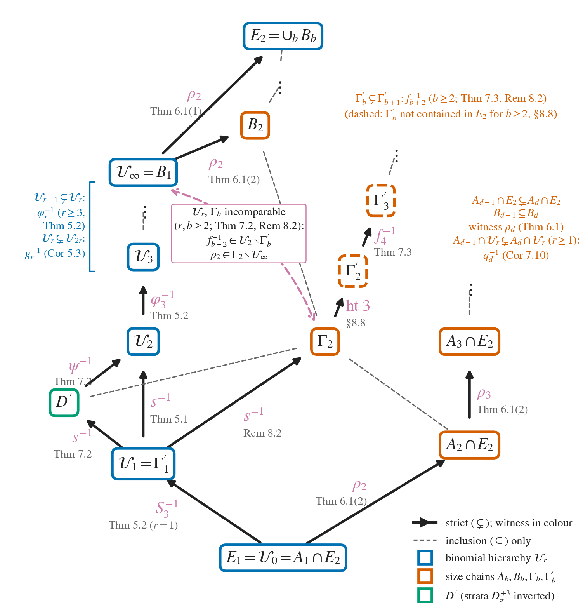
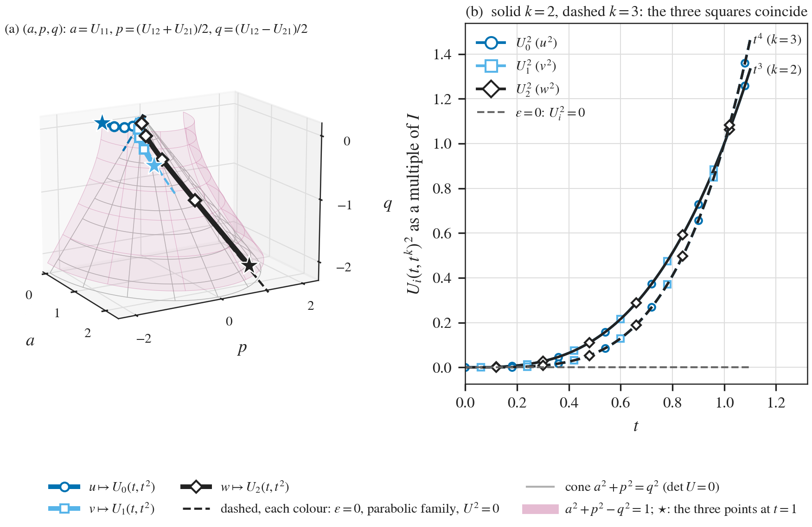
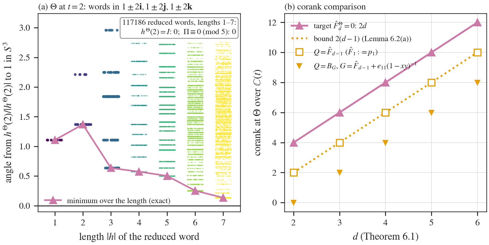
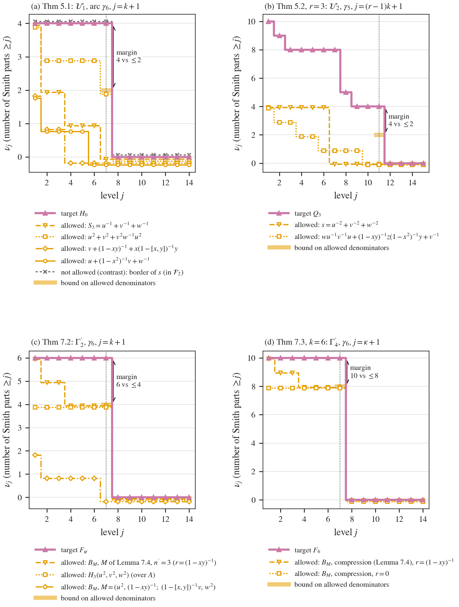
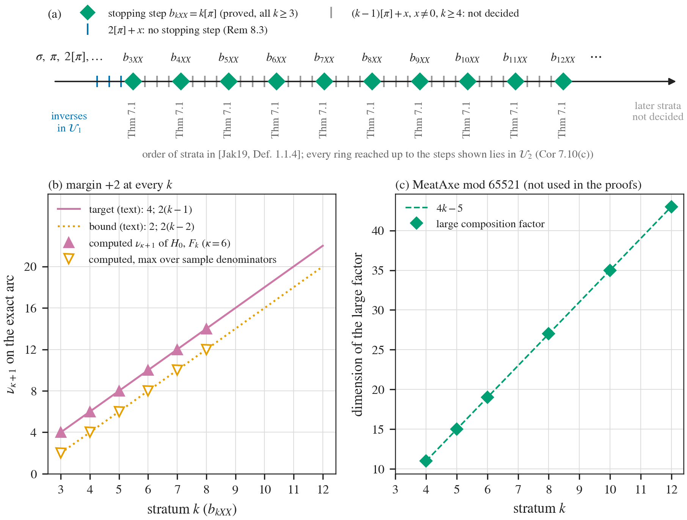
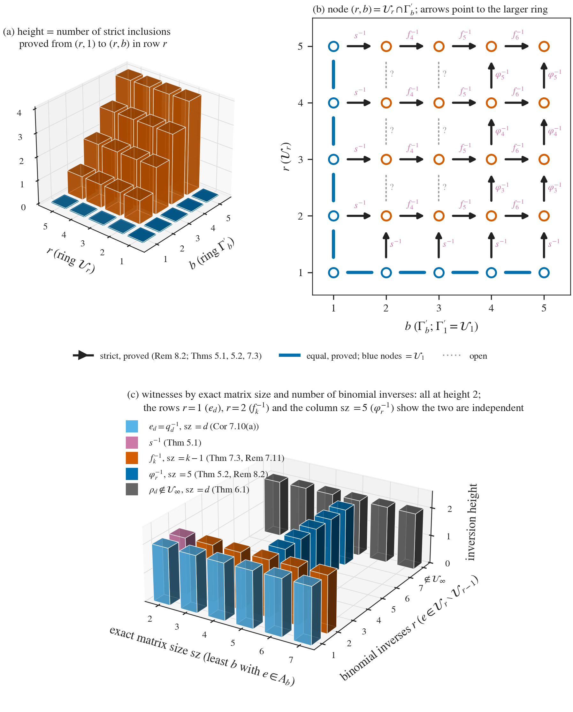

At a glance
What the paper contributes
The free field D of A = ℂ[F3] is built in stages: E1 inverts the nonzero elements of A, E2 those of E1, and so on. The stages never stabilise (Reutenauer; Herbera–Sánchez). The paper works inside the single stage E2, where one restricts which elements are inverted.
- A non-membership criterion (Theorem A = Theorem 3.4). If H−1 has its entries in the ring UΣ generated by the inverses of a family Σ of full matrices, each atomic factor of H is stably associated with an atomic factor of some Q ∈ Σ (Lemma 3.1). To refute that, it suffices that one atomic factor of H be more singular than every Q at some evaluation, measured by an invariant that does not grow on factors: Smith counts along an arc, the corank on a curve of integral quaternions, the corank at a character. The allowed denominators may themselves be singular there.
- Two hierarchies inside E2, strict at every step (Theorem B). The rings 𝒰r generated by inverses of sums of products of at most r inverse binomials: 𝒰r−1 ⊊ 𝒰r, with witness (u−2+v−2+w−2)−1 for r = 2; their union is a proper subring of E2. The matrix-size chain Ad−1 ∩ E2 ⊊ Ad ∩ E2 for every d ≥ 2. The two hierarchies are independent, and the size chain is already strict inside 𝒰2 (Corollary 7.10).
- Infinitely many stopping steps of the Dubrovin–Gräter–Hanke series inside E2 (Theorem C): for every k ≥ 3 the stratum of sums of k elements of Dπ, with explicit witnesses fk. That there are infinitely many stopping steps follows from Herbera–Sánchez, but no infinite family had been located within a fixed stage. The rings reached at these steps form a strict chain whose union is 𝒰2.
Main tools: Cohn's theory of firs, atoms and stable association, and of rational closures; Smith normal forms over ℂ[[t]] along an exact arc of 2×2 matrices; the free group generated by 1+2i, 1+2j, 1+2k; a grading argument that gives an atom for every k.
🚀 Start here: Theorem A: the non-membership criterion: one atomic factor against the allowed denominators.
Main results:
- Theorem A: the non-membership criterion: one atomic factor against the allowed denominators
- Theorem B: the binomial hierarchy and the size chain are strict inside E₂
- Theorem C: every k[π] is a stopping step of the Dubrovin–Gräter–Hanke series
🗺️ Map of the results (click a box to go to it)
Dependencies in the written proof: an arrow A → B means that this proof of B uses A. Every result rests on its written proof; the tags record what was checked besides, and each statement's “Evidence & scope” block says how far. The colour of a box is its strongest tag, in the order above; the tags in the box give the rest. Boxes with a thick border are the main results; click a box to read the statement.
📐 Setting (copied from the paper, §2.1)
\(P=\mathbb C\langle x,y,z\rangle \subset A=\mathbb C[F_3]\subset D\), where \(D\) is the free field, the universal field of fractions of \(P\) and of \(A\). We write \(u=1+x\), \(v=1+y\), \(w=1+z\). \(E_1=A[s^{-1}:0\neq s\in A]\subset D\) and \(E_2=E_1[e^{-1}:0\ne e\in E_1]\). A binomial is \(\ell =1-\beta h\), \(h\in F_3\setminus \{ 1\} \), \(\beta \in \mathbb C^\times \). For \(r\ge 0\), \(\mathcal F_r\) is the span of the products \(a_0\ell _1^{-1}a_1\cdots \ell _q^{-1}a_q\) with \(q\le r\), \(\ell _i\) binomials and \(a_i\in A\), and \(\mathcal U_r=E_1[\mathcal F_r^{-1}]\), the subring of \(D\) generated by \(E_1\) and the inverses of the nonzero elements of \(\mathcal F_r\); \(\mathcal U_\infty =\bigcup _r\mathcal U_r\). \(A_b\) is the subring of \(D\) generated by \(A\) and the entries of \(G^{-1}\) for all full \(a\times a\) matrices \(G\) over \(A\) with \(a\le b\). A square matrix over a subring of \(D\) is full if it is invertible over \(D\).
1 Introduction
Let \(\Sigma \) be a family of full matrices over \(P\) and \(H\) a full square matrix over \(P\) with an atomic factor \(G\) in a complete factorization. If for every \(Q\in \Sigma \) there is a monotone invariant \(\mu _Q\) (Definition 3.3) with \(\mu _Q(G){\gt}\mu _Q(Q)\), then \(H^{-1}\) does not have entries in \(U_\Sigma \).
Lean · ours, in partshow
as for Theorem 3.4: with the conclusion of Lemma 3.1 as a hypothesis
✅ Checked when this page was built: Criterion.lean compiles with Lean 4.35.0, no errors, no sorry. Axioms — not_inverseInU: propext, Classical.choice, Quot.sound.
Reproduce: Lean 4.35.0, Mathlib f0b4c8150aa0; in that Lean project, lake env lean Criterion.lean (SHA-256 of the compiled file: b3acc608d6445b7e…; a source page on this site may show it with comments edited, under its own hash).
Trust base: 🔒 kernel only — only part of the statement is formal (see the box). Lean: 1 result, standard axioms only
🆕 Classical and new: new, as far as the paper found: no use of Smith profiles along an arc, nor of coranks of atoms at a representation where the allowed denominators are singular, to prove non-membership (§8.8). It rests on Lemma 3.1, which the paper does not claim (Remark 8.6); kernel dimensions already separate stable association classes [SV26].
↳ Not used by another result of the paper.
💡 In plain words (commentary, not part of the paper)
1. To show that an element is not in a ring generated by inverting a family \(\Sigma \) of matrices, one has to exclude every formula. Lemma 3.1 reduces this to atoms: if \(H^{-1}\) has its entries in \(U_\Sigma \), every atomic factor of \(H\) is stably associated with an atomic factor of a single \(Q\in \Sigma \). The criterion then compares numbers: a monotone invariant (Definition 3.3) does not change under stable association and does not grow when one passes to a factor, so if one atomic factor \(G\) of \(H\) scores higher than \(Q\), for every \(Q\in \Sigma \), then \(H^{-1}\) is not in \(U_\Sigma \). 2. The paper uses three invariants: the number \(\nu _j\) of Smith invariant factors of order \(\ge j\) along an arc on which \(u^2,v^2,w^2\) become the same scalar (§4.1); the corank on a curve of quaternions on which every binomial is invertible (§4.2); and the corank at the character \(\chi \colon x_j\mapsto -1\). The invariant may be chosen separately for each \(Q\), and it need not vanish on the allowed denominators: it only has to be smaller there than on the target. That is what makes the criterion work inside \(E_2\), where the allowed denominators are singular at the evaluations that detect the witnesses. 3. New and not new, as the paper says: the paper found no use of Smith profiles along an arc, nor of coranks of atoms at a representation where the allowed denominators are singular, to prove non-membership (§8.8). Lemma 3.1 is the analogue, for \(U_\Sigma \) and without factor-completeness, of results of Cohn, and the correspondence behind it is not claimed (Remark 8.6); kernel dimensions already separate stable association classes [SV26].
🆕 Classical and new: the rings 𝒰_r have not been studied, to the paper's knowledge; nor the strictness of the size chain inside E₂ for d ≥ 3. The case d = 2, and the strictness of the chain A_b in E(b), follow from [HS15, Thm 4.6] by pivoting (§8.8). The separation of the whole stages E(n) ⊊ E(n+1) is [Reu96], [HS15].
↳ Not used by another result of the paper.
💡 In plain words (commentary, not part of the paper)
1. Inside the second stage \(E_2\) of the rational closure of \(A=\mathbb C[F_3]\) two natural ways of measuring complexity give hierarchies that are strict at every step. (i) Count the inverse binomials: \(\mathcal U_r\) is generated by \(E_1\) and the inverses of sums of products of at most \(r\) inverse binomials, with coefficients in \(A\); then \(\mathcal U_{r-1}\subsetneq \mathcal U_r\) for every \(r\ge 1\), and for \(r=2\) the witness is \((u^{-2}+v^{-2}+w^{-2})^{-1}\). (ii) Count the size of the inverted matrices: \(A_{d-1}\cap E_2\subsetneq A_d\cap E_2\) for every \(d\ge 2\), and the union of all \(\mathcal U_r\) is still a proper subring of \(E_2\). 2. Why: each step is an application of Theorem A. For (i) the exact arc makes the squares \(u^2,v^2,w^2\) the same scalar \(t^{k+1}I\), so a quadratic target has four Smith parts at level \(k+1\), while every allowed denominator, with \(k\) chosen after it, has at most two (Theorem 5.1; Theorem 5.2 and Lemma 5.6 for \(r\ge 3\)). For (ii) the quaternion curve makes every binomial invertible, so every allowed border of an \(a\times a\) matrix has corank at most \(2a\), while the target \(\hat F_d\) vanishes there and has corank \(2d\) (Theorem 6.1, Lemma 6.2). 3. New and not new, as the paper says: the rings \(\mathcal U_r\), and the strictness of the size chain inside \(E_2\) for \(d\ge 3\), have not been studied to the paper’s knowledge; the case \(d=2\) follows from [HS15, Thm 4.6] by pivoting (§8.8), and the separation of the whole stages \(E(n)\subsetneq E(n+1)\) is [Reu96], [HS15]. The two hierarchies are independent (Remark 8.2, Remark 7.11).
For every \(k\ge 3\), the stratum of sums of \(k\) elements of \(D_\pi \) is a stopping step of the Dubrovin–Gräter–Hanke series of \(D\) for the monoid \(\mathbb C^\times F_3\) of scalar multiples of group elements, in Jakobs’ formulation [Jak19, Def. 1.1.4]. Witnesses are \(u^{-2}+v^{-2}+w^{-2}\) for \(k=3\) and \(f_k=u^{-2}+w^{-2}+\sum _{i=1}^{k-2}y^iu^{-2}y^{-i}\) for \(k\ge 4\) (Theorems 7.1, 7.3).
🆕 Classical and new: infinitely many stopping steps follow from [HS15], but none had been located within a fixed stage; the first stopping step (sums of two monomials) is implicit in [Gra20, §4].
↳ Not used by another result of the paper.
💡 In plain words (commentary, not part of the paper)
1. The Dubrovin–Gräter–Hanke series builds the free field step by step: it adds sums, products and, when the current set is a ring, the inverses of the first stratum whose inverses are missing; such a stratum is a stopping step. After \(A\) and the inverse binomials, \(D_\pi \) is the first stratum with products of two inverse binomials. The theorem says that for every \(k\ge 3\) the stratum of sums of \(k\) elements of \(D_\pi \) is a stopping step, and all of this happens while the ring built is still inside \(E_2\). 2. Why: when the series reaches the stratum \(k[\pi ]\), the ring built so far lies in \(\Gamma '_{k-2}\cap E_2\) (Lemma 7.5, using the compression of Lemma 7.4), so it suffices to find a sum of \(k\) elements of \(D_\pi \) whose inverse is not in \(\Gamma '_{k-2}\): \(s=u^{-2}+v^{-2}+w^{-2}\) for \(k=3\) (Theorem 5.1) and \(f_k=u^{-2}+w^{-2}+\sum _{i=1}^{k-2}y^iu^{-2}y^{-i}\) for \(k\ge 4\) (Theorem 7.3). For every \(k\) an atom is needed; the paper gets it in the group algebra of the free group on \(u,y,w\) by a grading argument (Lemma 7.9) and applies Theorem A to that single atomic factor. 3. New and not new, as the paper says: that the series has infinitely many stopping steps in total already follows from [HS15, Thm 4.6]; what is added is that infinitely many occur inside the second stage, and which strata they are. The first stopping step (sums of two monomials) is implicit in [Gra20, §4]. The result is relative to the monoid \(\mathbb C^\times F_3\), in Jakobs’ formulation [Jak19, Def. 1.1.4], and it does not decide the intermediate strata \((k-1)[\pi ]+x\) with \(x\ne 0\), \(k\ge 4\) (Remark 8.3).
🖼️ Figure 1

The subrings of \(D\) studied in this paper. A solid arrow is a strict inclusion, labelled by an element of the larger ring that is not in the smaller one and by the result that proves it; a dashed grey line is an inclusion not marked as strict; the dashed double arrow joins the incomparable rings \(\mathcal U_\infty \) and \(\Gamma _2\) (Theorems 6.1 and 7.2; more generally \(\mathcal U_r\) and \(\Gamma _b\) are incomparable for \(r,b\ge 2\), Remark 8.2). The inclusion \(\Gamma _2\subsetneq \Gamma _2'\) is witnessed by an element of inversion height \(3\) (§8.8). Dashed boxes: the rings \(\Gamma _b'\), which for \(b\ge 2\) are not contained in \(E_2\) (§8.8). The rings \(\Gamma _b\), \(\Gamma _b'\) and \(D'\) are defined in §2.4.
2 Rings and notation
Let \(N\ge 1\) and let \(L=A_0+\sum _iA_ix_i\) be an \(N\times N\) monic pencil with \(A_0\) invertible. Then \(L\) is full and not invertible, and \(L\) is an atom iff the matrices \(M_i=A_0^{-1}A_i\) (\(1\le i\le g\)) have no common invariant subspace other than \(0\) and \(k^N\).
🆕 Classical and new: classical: Cohn [Coh06, Thm 5.8.8], in the form of [HKV22, Rem. 2.6].
↳ Used in: Lemma 5.7, Proposition 5.8, Lemma 6.2, Lemma 7.8, 7.12, 8.4
\(L(0)=A_0\) is invertible, so \(L\) is full (§2.2(a)). A right monic matrix is not a unit [Coh06, Lemma 5.8.1, p. 312]. For \(N=1\), [Coh06, Thm 5.8.8, p. 317] says that \(L\) is an atom, and the subspace condition holds trivially. Let \(N{\gt}1\). By [Coh06, Thm 5.8.8], \(L\) is not an atom iff there are \(P,Q\in GL_N(k)\) and \(r,s{\gt}0\) with \(r+s=N\) such that every \(PA_jQ\) (\(j=0,\dots ,g\)) has a zero \(r\times s\) block in the upper right corner.
Given such \(P,Q\), put \(W=Q\, \mathrm{span}(e_{r+1},\dots ,e_N)\) and \(W'=P^{-1}\mathrm{span}(e_{r+1},\dots ,e_N)\). Then \(A_jW\subseteq W'\) for all \(j\). Since \(A_0\) is injective and \(\dim W=\dim W'\), we get \(A_0W=W'\), hence \(M_iW\subseteq A_0^{-1}W'=W\), with \(0{\lt}\dim W=s{\lt}N\).
Conversely, let \(W\) be invariant with \(0{\lt}s=\dim W{\lt}N\). Take \(Q\) whose last \(s\) columns span \(W\), and \(P=Q^{-1}A_0^{-1}\). Then \(PA_0Q=I\) and \(PA_iQ=Q^{-1}M_iQ\) maps \(\mathrm{span}(e_{r+1},\dots ,e_N)\) into itself, so the upper right \(r\times s\) block vanishes for all \(j\). \(\square \)
For \(1\le n{\lt}\omega \), \(D_n\) is the set of sums of at most \(n\) elements of \(D_1\), and \(D_\omega =A\).
The first Case 3 occurs at \(\alpha '=\omega \), with \(\alpha _1=2\); \(D_{\omega +1}=A\cup D_2^{-1}\), and the nonzero elements of \(D_2^{-1}\) are the monomials and the unit multiples \(\ell ^{-1}m\) of inverse binomials.
From \(\omega +1\) on, Case 1 applies up to the first index \(\sigma \) at which the set is additively closed, and \(D_\sigma =V_1\).
If \(D_{\omega +1}D_{\omega +1}\not\subseteq V_1\), Case 2 applies at \(\sigma \) with the multiset \(2[\omega +1]\), so \(\pi =\sigma +1\) and \(D_\pi =V_1\cup D_{\omega +1}D_{\omega +1}\).
Let \(k\ge 2\) and suppose \(D_\pi ^{+j}\not\subseteq D_\pi ^{+(j-1)}+V_1\) for \(2\le j\le k\). Then the strata born after \(\pi \) and before \(k[\pi ]\) are among the \(j[\pi ]+x\) with \(1\le j{\lt}k\) and \(x\in N(\sigma )\), each contained in \(D_\pi ^{+j}+V_1\), no Case 2 or Case 3 occurs in between, and \(D_{k[\pi ]}=D_\pi ^{+k}\).
↳ Used in: 5.9, Lemma 7.5, Corollary 7.10, 7.12
(1) For \(n{\lt}\omega \), \(D_n\) is not additively closed (it misses sums of \(n+1\) distinct monomials), so Case 1 applies. For \(n{\lt}\omega \), every multiset smaller than \((n+1)[1]\) involves only the ordinals \(0\) and \(1\), with at most \(n\) copies of \(1\), so its sum lies in \(D_n\); and \((n+1)[1]\) gives sums of \(n+1\) distinct monomials, which are not in \(D_n\).
\(D_\omega =A\) is a ring and \(D_1^{-1}\subseteq D_1\). A sum \(\alpha g+\beta h\) of two monomials with \(g\ne h\) is not a unit of \(A\) [Jak19, Thm 1.3.10], so \(D_2^{-1}\not\subseteq A\); and \((\alpha g+\beta h)^{-1}=\ell ^{-1}(\alpha g)^{-1}\) with \(\ell =1+\alpha ^{-1}\beta g^{-1}h\).
Case 2 needs an additively closed set and Case 3 a ring. Sums of elements of \(D_{\omega +1}\) lie in \(V_1\), which is the additive closure of \(D_{\omega +1}\) (§2.1: \(m\ell ^{-1}m'\) is a unit multiple of an inverse binomial). So the first additively closed set is \(V_1\).
In \(N(\sigma )\) the multisets below \(2[\omega +1]\) are those over \(\{ 0,\dots ,\omega \} \) and the \([\omega +1]+x\) with \(x\) over \(\{ 0,\dots ,\omega \} \); any multiset containing an ordinal in \((\omega +1,\sigma ]\) is larger. The corresponding products lie in \(A\cdot (A\cup D_2^{-1})\cdot A\subseteq V_1\).
As long as Case 1 applies, the indices are taken in increasing order; every multiset containing an ordinal born after \(\pi \) exceeds every multiset of \(N(\pi )\) [Jak19, p. 3], and \(j[\pi ]+x{\lt}(j+1)[\pi ]\). The strata over \(N(\sigma )\) lie in \(V_1\), so \(D_{j[\pi ]+x}\subseteq D_\pi ^{+j}+V_1\) (recall \(V_1\subseteq D_\pi \)). Before \(k[\pi ]\) the current set lies in \(D_\pi ^{+(k-1)}+V_1\), which by hypothesis does not contain \(D_\pi ^{+k}\); it is therefore not additively closed, so neither Case 2 nor Case 3 can occur, and \(k[\pi ]\) is eventually the least multiset with a new sum. \(\square \)
3 The criterion
Let \(R\) be a semifir with universal field of fractions \(D\), and \(\Sigma \) a set of full matrices over \(R\), each with a complete factorization (this holds for every \(\Sigma \) if \(R\) is fully atomic, for instance a fir such as \(P\) or \(A\)). Let \(U_\Sigma \subseteq D\) be the subring generated by \(R\) and the entries of \(Q^{-1}\), \(Q\in \Sigma \). If \(H\) is a full matrix over \(R\) and \(H^{-1}\) has entries in \(U_\Sigma \), then every atomic factor of \(H\) is stably associated with an atomic factor of a complete factorization of a single member \(Q\in \Sigma \). Conversely, if \(H\) has a complete factorization whose factors are all stably associated with atomic factors of members of \(\Sigma \), then \(H^{-1}\) has entries in \(U_\Sigma \).
🆕 Classical and new: not claimed: the analogue, for U_Σ and without factor-completeness, of Cohn's results on localization at factor-complete sets [Coh06, Thm 7.11.9] (Remark 8.6).
↳ Used in: Theorem 3.4, Lemma 7.9, 7.12, 8.1, 8.4, 8.5, 8.6
By (T3) the torsion submodules of \(M\) form a sublattice \(L(M)\) of the submodule lattice, so \(L(M)\) is modular.
For \(L\subseteq L'\) in \(L(M)\), the quotient \(L'/L\) is torsion by (T2). The interval \([L,L']\) has no interior point exactly when \(L'/L\) is \(0\) or Tor-simple: the torsion submodules of \(L'/L\) are the \(L''/L\) with \(L''\in [L,L']\), by (T2).
By the Schreier refinement theorem [Coh06, App. Thm A.3, p. 521], applied in the modular lattice \(L(M)\) of torsion submodules (not in the lattice of all submodules), the chains \(0\subseteq N\subseteq M\) and \((M_j)\) have refinements in \(L(M)\) whose intervals pair off into projective intervals.
Projective intervals are isomorphic as lattices and give isomorphic quotient modules [Coh06, p. 521]. A refinement of \((M_j)\) only repeats terms, so its nontrivial intervals are the \([M_{j-1},M_j]\).
Hence every nontrivial interval of the refinement of \(0\subseteq N\subseteq M\) has a Tor-simple quotient isomorphic to some \(M_j/M_{j-1}\). The part between \(0\) and \(N\) is a \(\mathcal C\)-filtration of \(N\).
The part between \(N\) and \(M\) is a chain \(N=L_0\subseteq \cdots \subseteq L_t=M\). The \(L_i/N\) are torsion submodules of \(M/N\) with \((L_i/N)/(L_{i-1}/N)\cong L_i/L_{i-1}\), which gives a \(\mathcal C\)-filtration of \(M/N\).
If \(M/N\) is Tor-simple, a \(\mathcal C\)-filtration of it with distinct terms is \(0\subset M/N\), so \(M/N\) is isomorphic to a member of \(\mathcal C\). \(\square \)
Let \(j\ge 1\).
(Factors.) If \(Y=G_1FG_2\) with all matrices square of the same size, then \(\nu _j(F^\gamma )\le \nu _j(Y^\gamma )\), whether or not \(G_1^\gamma ,G_2^\gamma \) are singular.
(Upper interlacing.) If \(Y=\begin{pmatrix} L & \boldsymbol \omega \\ \boldsymbol \alpha & \delta \end{pmatrix}\) with a bottom block of size \(m\) after evaluation, then \(\nu _j(Y)\le \nu _j(L)+m\).
(Lower interlacing.) In the same situation, \(\nu _j(L)-m\le \nu _j(Y)\).
(Chains.) If \(L\) is block upper triangular with diagonal blocks \(\Delta _1,\dots ,\Delta _q\), each with \(\det \Delta _i\not\equiv 0\) and largest part \(e_i\), then every part of \(L\) is at most \(e_1+\dots +e_q\). If \(L\) is block diagonal, its largest part is the largest over the blocks.
🆕 Classical and new: cf. [Tho79]; the paper gives a direct proof.
↳ Used in: 3.3, Lemma 4.4, Lemma 5.6
(1) \(\operatorname {im}(G_1FG_2)\subseteq \operatorname {im}(G_1F)\), so \(\operatorname {coker}(G_1F)\) is a quotient of \(\operatorname {coker}Y\); likewise \(\operatorname {coker}F^{\mathsf T}\) is a quotient of \(\operatorname {coker}(F^{\mathsf T}G_1^{\mathsf T})\), and transposition does not change Smith forms; a quotient does not increase \(\mu (t^{j-1}\, \cdot )\). (2) \(\operatorname {coker}Y\) maps onto \(\operatorname {coker}[L\ \boldsymbol \omega ]\) with kernel generated by \(m\) elements, and \(\operatorname {coker}[L\ \boldsymbol \omega ]\) is a quotient of \(\operatorname {coker}L\); over a discrete valuation ring a submodule of an \(m\)-generated module is \(m\)-generated. (3) \(\operatorname {coker}[L\ \boldsymbol \omega ]=\operatorname {coker}L/\operatorname {im}\boldsymbol \omega \) and \(t^{j-1}(\mathcal X/\mathcal X')\cong t^{j-1}\mathcal X/(t^{j-1}\mathcal X\cap \mathcal X')\) with \(t^{j-1}\mathcal X\cap \mathcal X'\) at most \(m\)-generated, so \(\mu (t^{j-1}\, \cdot )\) drops by at most \(m\); then \(\operatorname {coker}Y\twoheadrightarrow \operatorname {coker}[L\ \boldsymbol \omega ]\). (4) Since each \(\Delta _i\) is injective, \(\operatorname {coker}L\) is an iterated extension of the \(\operatorname {coker}\Delta _i\), and \(t^{e_1+\dots +e_q}\) kills it. \(\square \)
🛡️ Evidence & scope
Program: nu_j does not increase on factors: 480 random pairs, with a control (supplement C01). scripts/auditoria_S23/s23_monotonia.py
A monotone invariant is a function \(\mu \) from square matrices over \(P\) to \(\mathbb N\cup \{ \infty \} \) such that
\(\mu (F\oplus I)=\mu (F)\) for identity matrices \(I\) of every size, and \(\mu (MFN)=\mu (F)\) for \(M,N\) invertible over \(P\) of the size of \(F\);
\(\mu (F)\le \mu (G_1FG_2)\) whenever \(F,G_1,G_2\) are square of the same size.
Examples.
For an arc (a unital ring homomorphism) \(\gamma :P\to M_m(\mathbb C[[t]])\) and \(j\ge 1\), \(\mu (F)=\nu _j(F^\gamma )\). Condition 1 holds because \(M^\gamma ,N^\gamma \) are invertible over \(\mathbb C[[t]]\) and padding does not change \(\nu _j\); condition 2 is Lemma 3.2(1).
For a unital ring homomorphism \(\Theta :P\to M_m(K)\) into matrices over a field (not necessarily commutative), \(\mu (F)=\operatorname {corank}F^\Theta \). Condition 1 holds because invertible matrices go to invertible matrices; condition 2 holds because \(\operatorname {rank}(XYZ)\le \operatorname {rank}Y\).
Neither example needs the arc or \(\Theta \) to extend to \(D\), or even to \(A\). Example (b) is \(m\) times the nullity of the Sylvester rank function \(F\mapsto \operatorname {rank}F^\Theta /m\), and every Sylvester rank function with values in \(\frac1m\mathbb Z\) gives a monotone invariant in the same way [Mal80], [Sch85, Ch. 7]. Example (a) is a difference of two instances of (b): if \(\Theta _j:P\to M_{mj}(\mathbb C)\) is the reduction of \(\gamma \) modulo \(t^j\) followed by the regular representation of \(\mathbb C[t]/t^j\), then \(\nu _j(F^\gamma )=\operatorname {corank}F^{\Theta _j}-\operatorname {corank}F^{\Theta _{j-1}}\), because multiplication by \(t^\lambda \) on \(\mathbb C[t]/t^j\) has kernel of dimension \(\min (\lambda ,j)\), so \(\operatorname {corank}F^{\Theta _j}=\sum _i\min (\lambda _i,j)\). Its monotonicity is Lemma 3.2(1); it does not follow from that of (b).
↳ Used in: 8.5
Let \(\Sigma \) be a family of full matrices over \(P\) and \(H\) a full square matrix over \(P\) with an atomic factor \(G\) in a complete factorization. Suppose that for every \(Q\in \Sigma \) there is a monotone invariant \(\mu _Q\) with \(\mu _Q(G){\gt}\mu _Q(Q)\). Then \(H^{-1}\) does not have entries in \(U_\Sigma \).
Lean · ours, in partshow
with the conclusion of Lemma 3.1 as a hypothesis
✅ Checked when this page was built: Criterion.lean compiles with Lean 4.35.0, no errors, no sorry. Axioms — not_inverseInU: propext, Classical.choice, Quot.sound.
Reproduce: Lean 4.35.0, Mathlib f0b4c8150aa0; in that Lean project, lake env lean Criterion.lean (SHA-256 of the compiled file: b3acc608d6445b7e…; a source page on this site may show it with comments edited, under its own hash).
Trust base: 🔒 kernel only — only part of the statement is formal (see the box). Lean: 1 result, standard axioms only
↳ Used in: Theorem A, Theorem 5.1, Theorem 5.2, Corollary 5.3, 5.9, Theorem 6.1, Theorem 7.2, Theorem 7.3, Corollary 7.10, 7.11, 7.12, 8.1, 8.2, 8.3, 8.4
Suppose that \(H^{-1}\) has entries in \(U_\Sigma \). By Lemma 3.1 there are \(Q\in \Sigma \) and an atomic factor of \(Q\) stably associated with \(G\). In a complete factorization, \(Q=G_1\mathcal A G_2\) with \(\mathcal A,G_1,G_2\) square of the size of \(Q\) and \(\mathcal A\) an atom stably associated with that factor, hence with \(G\) [Coh06, Cor. 0.5.5]. Then \(\mu _Q(G)=\mu _Q(\mathcal A)\) by condition 1, and \(\mu _Q(\mathcal A)\le \mu _Q(Q)\) by condition 2, a contradiction. \(\square \)
\(\mathcal U_r=U_{\Sigma _r}\) with \(\Sigma _r=\Sigma _0\cup \{ \tilde B_f:0\ne f\in \mathcal F_r\} \), one border per \(f\).
✅ Checked when this page was built: InverseIdentities.lean compiles with Lean 4.35.0, no errors, no sorry. Axioms — chain_inv_corner: propext, Classical.choice, Quot.sound.
Reproduce: Lean 4.35.0, Mathlib f0b4c8150aa0; in that Lean project, lake env lean InverseIdentities.lean (SHA-256 of the compiled file: 3e2df75becd9213c…; a source page on this site may show it with comments edited, under its own hash).
Trust base: 🔒 kernel only — only part of the statement is formal (see the box). Lean: 1 result, standard axioms only
↳ Used in: Theorem 5.1, Corollary 5.3, Theorem 6.1, 8.2
\(\mathcal U_r\subseteq U_{\Sigma _r}\): \(U_{\Sigma _r}\) is a ring containing \(E_1\) and \(f^{-1}\), since \(-f^{-1}\) is a corner entry of \(\tilde B_f^{-1}\). \(U_{\Sigma _r}\subseteq \mathcal U_r\): the entries of \(\tilde B_f^{-1}\) are polynomials in the entries of \(L^{-1}\) (whose entries lie in \(E_1\), because \(\ell ^{-1}\in E_1\) and \(a_i\in A\)), in \(f^{-1}\) and in the entries of the inverse pivot, which lie in \(A\). \(\square \)
🛡️ Evidence & scope
Program: chain inverse and Schur(B_f) = -f with random non-commuting blocks, with controls (supplement C02). scripts/auditoria_S12/s12_cadena_schur.py
\(\Gamma _2'=U_{\Sigma _2'}\) with \(\Sigma _2'=\Sigma _1\cup \{ \tilde B_M:M\text{ full over }V_1,\ a\le 2\} \), one lift per \(M\).
↳ Used in: 5.9, Theorem 7.2, Theorem 7.3
\(\tilde B_M\) is full, because \(M\) is full and \(\Delta \) is invertible over \(D\). \(\Gamma _2'\subseteq U_{\Sigma _2'}\): \(U_{\Sigma _2'}\supseteq U_{\Sigma _1}=\mathcal U_1\); the block of \(\tilde B_M^{-1}\) complementary to the triangular pivot is \(B_M^{-1}\), and the \((1,1)\) block of \(B_M^{-1}\) is \(M^{-1}\) (Schur complement of \(\Delta \)). \(U_{\Sigma _2'}\subseteq \Gamma _2'\): the entries of \(\tilde B_M^{-1}\) are polynomials in those of \(B_M^{-1}\), of the inverse pivot (in \(A\)) and of elements of \(A\), and
with \(\Delta ^{-1}\in M_m(E_1)\subseteq M_m(\mathcal U_1)\) and \(R,C\) over \(A\). \(\square \)
|
Result |
Witness |
In |
Not in |
Invariant (Def. 3.3) |
Target |
Bound |
Margin |
§ |
|
Thm 5.2, \(r=1\) |
\(S_3^{-1}\), \(S_3=u^{-1}+v^{-1}+w^{-1}\) |
\(\mathcal U_1\) |
\(E_1=\mathcal U_0\) |
corank at \(\chi \) (target \(H_{3,1}\)) |
\(2\) |
\(\le 1\) |
\(+1\) |
5.4 |
|
Thm 5.1 |
\(s^{-1}\), \(s=u^{-2}+v^{-2}+w^{-2}\) |
\(\mathcal U_2\) (also \(D'\), \(\Gamma _2\)) |
\(\mathcal U_1\) |
\(\nu _{k+1}\) on \(\gamma _k\) (target \(H_0\)) |
\(4\) |
\(\le 2\) |
\(+2\) |
5.2 |
|
Thm 5.2, \(r\ge 3\) |
\(\varphi _r^{-1}\), (5.1) |
\(\mathcal U_r\) |
\(\mathcal U_{r-1}\) |
\(\nu _{(r-1)k+1}\) on \(\gamma _k\) (target \(Q_r\)) |
\(\ge 3\) |
\(\le 2\) |
\(\ge +1\) |
5.4 |
|
Cor 5.3 |
\(g_r^{-1}\), \(g_r=u^{-2r}+v^{-2r}+w^{-2r}\) |
\(\mathcal U_{2r}\) |
\(\mathcal U_r\) |
\(\nu _{rk+1}\) on \(\gamma _k\) (target \(H_{3,2r}\)) |
\(4\) |
\(\le 2\) |
\(+2\) |
5.5 |
|
Thm 6.1 |
\(\rho _d=(\hat F_d^{-1})_{11}\) |
\(A_d\cap E_2\), \(B_d\) |
\(W_{d-1}\) (\(\supseteq A_{d-1}\), \(B_{d-1}\); for \(d=2\): \(\mathcal U_\infty \)) |
corank at \(\Theta \) over \(\mathbb C(t)\) (target \(\hat F_d\)) |
\(2d\) |
\(\le 2(d-1)\) |
\(+2\) |
6.2 |
|
Thm 7.2 |
\(\psi ^{-1}\), \(\psi =u^{-2}+v^{-2}+w^{-2}+yu^{-2}y^{-1}\) |
\(\mathcal U_2\) |
\(\Gamma _2'\) (\(\supseteq \Gamma _2\supseteq D'\)) |
\(\nu _{k+1}\) on \(\gamma _k\) (target \(F_\psi \)) |
\(6\) |
\(\le 4\) |
\(+2\) |
7.5 |
|
Thm 7.3, \(k\ge 4\) |
\(f_k^{-1}\) |
\(\mathcal U_2\cap \Gamma _{k-1}'\), \(\mathcal U_2\cap A_{k-1}\) (Rem 7.11) |
\(\Gamma _{k-2}'\) |
\(\nu _{\kappa +1}\) on \(\gamma _\kappa \) (atomic factor \(G_k\) of \(F_k\)) |
\(2(k-1)\) |
\(\le 2(k-2)\) |
\(+2\) |
7.6 |
|
Cor 7.10(a), \(d\ge 2\) |
\(e_d=q_d^{-1}\), \(q_d=w^{-1}+\sum _{i{\lt}d}y^iu^{-1}y^{-i}\) |
\(\mathcal U_1\cap A_d\) |
\(A_{d-1}\) |
corank at \(\chi \) (atomic factor \(G\) of \(L\)) |
\(d\) |
\(\le d-1\) |
\(+1\) |
7.6 |
|
Rem 7.11, \(k\ge 4\) |
\(f_k^{-1}\) |
\(\mathcal U_2\cap A_{k-1}\) |
\(A_{k-2}\) |
corank at \(\chi \) (atomic factor \(G_k\) of \(F_k\)) |
\(k-1\) |
\(\le k-2\) |
\(+1\) |
7.6 |
|
Rem 8.2, \(r\ge 3\) |
\(\varphi _r^{-1}\) |
\(\mathcal U_r\cap A_5\cap \Gamma _4'\) |
\(\Gamma _4\) (\(\supseteq A_4\)) |
corank at \(\chi \) (lifts over \(A\)); \(\nu _{(r-1)k+1}\) on \(\gamma _k\) (borders of \(\mathcal U_1\)); target \(M_r\) |
\(5\); \(\ge 3\) |
\(\le 4\); \(\le 2\) |
\(\ge +1\) |
8.2 |
Colour: blue shade = the number’s size within its column.
4 Two evaluations
\(\operatorname {tr}U_i=0\), \(\det U_i=-t\varepsilon \) and \(U_i^2=t\varepsilon \, I\). In particular \(U_i(t,t^k)^2=t^{k+1}I\), and \(U_i(t,t^k)\) has Smith parts \((1,k)\).
Lean · ours, in partshow
trace, determinant and square (not the Smith parts)
✅ Checked when this page was built: ExactArc.lean, ParabolicFamily.lean compiles with Lean 4.35.0, no errors, no sorry. Axioms — exactArc_trace, exactArc_det, exactArc_sq, exactArc_sq_pow, exactArc_eq_conj: propext, Classical.choice, Quot.sound.
Reproduce: Lean 4.35.0, Mathlib f0b4c8150aa0; in that Lean project, lake env lean ExactArc.lean ParabolicFamily.lean (SHA-256 of the compiled file: 56b3b2ae3774446a…; a source page on this site may show it with comments edited, under its own hash).
Trust base: 🔒 kernel only — only part of the statement is formal (see the box). Lean: 5 results, standard axioms only
↳ Used in: Lemma 4.2, Lemma 4.3, Proposition 5.8, Lemma 7.8, Lemma 7.9
\(U_0\) has zero trace, determinant \(-t\varepsilon \) and \(U_0^2=t\varepsilon I\), and conjugation by \(K^i\) preserves all three. The parts: every entry is divisible by \(t\) (since \(k\ge 1\)), the \((1,2)\) entry is \(-t\), and \(\det =-t^{k+1}\). \(\square \)
🛡️ Evidence & scope
Program: U_i(t,0) = I - K^i J K^-i, trace, determinant and U_i^2, exactly (supplement C03). scripts/smith_V1/t158_arco_exacto.py
🧪 Lab: the exact arc and the Smith profiles for your own k
Computes U_i = K^i U_0 K^-i exactly on \(\gamma _k\), its trace, determinant, square and Smith parts, and the profile \(\nu _j\) of the target \(H_0\) against the bound on the allowed denominators.
Let \(\gamma =\gamma _k\).
If \(F\) is a \(d\times d\) matrix with entries in \(\mathcal J^r\), every entry of \(F^\gamma \) is divisible by \(t^{r(k+1)}\); hence \(\nu _{r(k+1)}(F^\gamma )=2d\).
\(H_{3,2r}^\gamma =t^{r(k+1)}\left(\begin{pmatrix} 2 & 1 \\ 1 & 2 \end{pmatrix}\otimes I_2\right)\). Its four parts all equal \(r(k+1)\).
Lean · ours, in partshow
added to the Lean repository after publication (21-oct-2026): part (2) for every r: H_{3,2r} = s^r • [[2,1],[1,2]] when u², v², w² equal s • 1 (the case r general was not stated in Lean)
✅ Checked when this page was built: ExactArc.lean compiles with Lean 4.35.0, no errors, no sorry. Axioms — H_eval_pow, H0_eval: propext, Classical.choice, Quot.sound; prod_scalar_interleave: propext, Quot.sound.
Reproduce: Lean 4.35.0, Mathlib f0b4c8150aa0; in that Lean project, lake env lean ExactArc.lean (SHA-256 of the compiled file: 56b3b2ae3774446a…; a source page on this site may show it with comments edited, under its own hash).
Trust base: 🔒 kernel only — only part of the statement is formal (see the box). Lean: 3 results, standard axioms only
↳ Used in: Theorem 5.1, Corollary 5.3, 8.1
(1) A monomial of \(\mathcal J^r\) is \(a_0\, u_{i_1}^2a_1\cdots u_{i_r}^2a_r\) with \(a_i\in A\); each \(u_i^2\) evaluates to the central scalar \(t^{k+1}I\) (Lemma 4.1) and each \(a_i\) integrally. (2) Apply the same to \(U_i^r\), whose square is \(t^{r(k+1)}I\); \(\det \begin{pmatrix} 2 & 1 \\ 1 & 2 \end{pmatrix}=3\ne 0\). \(\square \)
Let \(\ell =1-\beta h\) be a binomial.
If \(\beta \chi (h)\ne 1\), then \(\ell ^{\gamma _k}\) is invertible over \(\mathbb C[[t]]\): no positive parts.
If \(\ell \) is exceptional, \(\ell ^{\gamma _k}\) has parts \((1,k)\) for every \(k\ge 1\).
Otherwise \(e_\ell {\lt}\infty \), and for \(k{\gt}e_\ell \) the parts of \(\ell ^{\gamma _k}\) equal those at \(\varepsilon =0\); in particular they are \({\lt}k\).
Lean · ours, in partshow
the trace of products of the N_j (core of (3))
✅ Checked when this page was built: ParabolicFamily.lean compiles with Lean 4.35.0, no errors, no sorry. Axioms — trace_prod_parabolic: propext, Classical.choice, Quot.sound.
Reproduce: Lean 4.35.0, Mathlib f0b4c8150aa0; in that Lean project, lake env lean ParabolicFamily.lean (SHA-256 of the compiled file: 70adc1a90a531fd1…; a source page on this site may show it with comments edited, under its own hash).
Trust base: 🔒 kernel only — only part of the statement is formal (see the box). Lean: 1 result, standard axioms only
↳ Used in: Lemma 4.4, Proposition 5.8, 5.9, Lemma 7.7, 7.12, 8.1
(1) At \(t=0\), \(\ell \mapsto (1-\beta \chi (h))I\). (2) Write \(\ell =g(1-\beta x_j^n)g^{-1}\) with \(\beta (-1)^n=1\). For \(n{\lt}0\) use \(1-\beta x_j^n=-\beta x_j^n(1-\beta ^{-1}x_j^{-n})\), a unit times a binomial of the same kind; so let \(n{\gt}0\). The roots of \(1-\beta X^n\) are simple, so \(1-\beta X^n=(1+X)c(X)\) with \(c(-1)\neq 0\); since \(x_j^\gamma \to -I\), \(c(x_j)^\gamma \) and \(g^\gamma \) are units, and the parts are those of \(u_j^\gamma =U_j\), namely \((1,k)\) (Lemma 4.1). (3) After conjugation, which changes \(\ell ^\gamma \) by a unit, write \(h=x_{j_1}^{n_1}\cdots x_{j_q}^{n_q}\) cyclically reduced. If \(q=1\), then \(\beta \chi (h)=1\) makes \(\ell \) exceptional, so \(q\ge 2\) and \(j_{i+1}\ne j_i\) for all \(i\), indices mod \(q\). Write \(N=tE_{12}\) and \(N_j=K^jNK^{-j}=t\, c_jr_j\) with \(c_j=(1,jt)^{\mathsf T}\) and \(r_j=(-jt,1)\). Then \(r_ac_b=(b-a)t\), \(N_j^2=0\), and \(\rho _t(x_j)^n=(-1)^n(I+nN_j)\) for \(n\in \mathbb Z\). Expanding the product,
over the subsets \(S=\{ i_1{\lt}\dots {\lt}i_m\} \) of \(\{ 1,\dots ,q\} \), with the factors in increasing order. For \(m\ge 1\),
which vanishes for \(m=1\). Hence \(\operatorname {tr}\rho _t(h)\) is a polynomial in \(t^2\) of degree \(q\) with leading coefficient \(\chi (h)\prod _in_i\prod _i(j_{i+1}-j_i)\ne 0\) (trace law; compare [LU69] for two parabolic generators). Since \(\det \rho _t(x_j)=1\), \(\det (I-\beta \rho _t(h))=1-\beta \operatorname {tr}\rho _t(h)+\beta ^2\) is a nonconstant polynomial, hence \(\not\equiv 0\), and \(e_\ell {\lt}\infty \). Finally \(\ell ^{\gamma _k}=\ell ^{\gamma }|_{\varepsilon =0}+O(t^k)\), and a perturbation \(O(t^k)\) of a matrix whose parts are all \({\lt}k\) does not change them (\(D+O(t^k)=D(I+O(t))\)). \(\square \)
🛡️ Evidence & scope
Program: leading coefficient of tr rho_t(h) for 60 words, both signs (supplement C04). scripts/auditoria_S12/s12_traza.py
Let \(0\neq f\in \mathcal F_q\) with border \(B_f\) and \(k{\gt}e(f)\). Then every part of \(L^{\gamma _k}\) is at most \(qk\), and \(\nu _{qk+1}(\tilde B_f^{\gamma _k})\le 2\).
↳ Used in: Theorem 5.1, Theorem 5.2, Corollary 5.3, 5.4, Proposition 5.8, 5.9, Theorem 7.2, 7.12, 8.1, 8.2
Each chain \(C_\tau \) has at most \(q\) binomials on its diagonal, each with \(\det \not\equiv 0\) on the arc and largest part \(\le k\) (Lemma 4.3). By Lemma 3.2(4) the parts of \(L^\gamma \) are at most \(qk\), so \(\nu _{qk+1}(L^\gamma )=0\). The pivots \(x_j\) of the lift evaluate to units, so \(\tilde B_f^\gamma \) and \(B_f^\gamma \) have the same parts up to zeros. The border is one row and one column, i.e. \(m=2\) after evaluation, and Lemma 3.2(2) gives \(\nu _{qk+1}\le 0+2\). \(\square \)
For every \(h\in F_3\setminus \{ 1\} \) and \(\beta \in \mathbb C^\times \), \(\det \bigl(I-\beta \, h^\Theta \bigr)\ne 0\) in \(\mathbb C(t)\). Hence every binomial, and every element \(\alpha g+\beta h\) of \(A\) with two terms, is invertible at \(\Theta \).
Lean · ours, in partshow
the finite part (residues modulo 5); added to the Lean repository after publication (21-oct-2026): the 2 × 2 representation Θ of §4.2: det(I + tq) = 1 + t², (I + tq)(I − tq) = (1 + t²) I, ξ² = −t² I and c ↦ 0
ThreeAxes.QuaternionResidues.res_mul_res_eq_zero_iffThreeAxes.QuaternionResidues.prod_res_ne_zeroThreeAxes.QuaternionTheta.det_one_add_smul_miThreeAxes.QuaternionTheta.det_one_add_smul_mjThreeAxes.QuaternionTheta.det_one_add_smul_mkThreeAxes.QuaternionTheta.one_add_smul_mul_one_sub_smulThreeAxes.QuaternionTheta.theta_c_eq_zeroThreeAxes.QuaternionTheta.smul_mul_smul_self
✅ Checked when this page was built: QuaternionResidues.lean, QuaternionTheta.lean compiles with Lean 4.35.0, no errors, no sorry. Axioms — res_mul_res_eq_zero_iff, prod_res_ne_zero, det_one_add_smul_mi, det_one_add_smul_mj, det_one_add_smul_mk, one_add_smul_mul_one_sub_smul, theta_c_eq_zero, smul_mul_smul_self: propext, Classical.choice, Quot.sound.
Reproduce: Lean 4.35.0, Mathlib f0b4c8150aa0; in that Lean project, lake env lean QuaternionResidues.lean QuaternionTheta.lean (SHA-256 of the compiled file: 69a51a05a38ebe68…; a source page on this site may show it with comments edited, under its own hash).
Trust base: 🔒 kernel only — only part of the statement is formal (see the box). Lean: 8 results, standard axioms only
🆕 Classical and new: the freeness of the group generated by 1+2i, 1+2j, 1+2k is classical [LPS88].
↳ Used in: Theorem 6.1, Lemma 6.2, 8.1
Entries of \(h^\Theta \) are regular at \(t=0\) and \(t=2\), so evaluation there is a ring homomorphism. If \(\beta \ne 1\): at \(t=0\), \(h^\Theta =I\) and the determinant is \((1-\beta )^2\neq 0\). If \(\beta =1\): at \(t=2\), \(\Theta (x_j)\) is the Lipschitz quaternion \(1+2\mathbf q_j\) of norm \(5\), and \(5(1+2\mathbf q_j)^{-1}=1-2\mathbf q_j\). For a reduced word \(h\) of length \(|h|\) with \(n_-\) negative letters, \(h^{\Theta }(2)=5^{-n_-}\Pi \) with \(\Pi \) a product of \(|h|\) elements of \(\{ 1\pm 2\mathbf i,1\pm 2\mathbf j,1\pm 2\mathbf k\} \), so \(\operatorname {Norm}\Pi =5^{|h|}\). Reduce modulo \(5\) through the ring homomorphism from the Lipschitz order to \(M_2(\mathbb F_5)\) with \(\mathbf i\mapsto \operatorname {diag}(2,3)\), \(\mathbf j\mapsto \begin{pmatrix} 0 & 1 \\ -1 & 0 \end{pmatrix}\). The six residues have rank one, \(M_a=u_av_a^{\mathsf T}\), and \(M_aM_b=(v_a^{\mathsf T}u_b)\, u_av_b^{\mathsf T}\) vanishes exactly when \(b\) is the residue of the conjugate \(1\mp 2\mathbf q\) of \(a=1\pm 2\mathbf q\) (a check of the \(36\) products; Appendix A.2, supplement C05). A reduced word has no consecutive inverse pair, so \(\Pi \not\equiv 0\pmod5\). If \(h^\Theta (2)=I\), then \(\Pi =5^{n_-}I\), \(5^{2n_-}=5^{|h|}\), \(|h|=2n_-\ge 1\), so \(n_-\ge 1\) and \(\Pi \equiv 0\), a contradiction. Finally, for a real quaternion \(q\ne 1\), \(\det (I-q)=\operatorname {Norm}(1-q){\gt}0\). Two-term elements are \(\alpha g(1+\alpha ^{-1}\beta g^{-1}h)\) with \(\det \Theta (g)\ne 0\). \(\square \)
🛡️ Evidence & scope
Program: residues mod 5 (36 products) and 3008 random reduced words, with a control (supplement C05). scripts/auditoria_S11/s11_a1_cuaterniones.py
🧪 Lab: the quaternion curve on a word of your choice
Multiplies \(1\pm 2\mathbf i\), \(1\pm 2\mathbf j\), \(1\pm 2\mathbf k\) along a reduced word in \(x,y,z\) (capital letter = inverse): the product \(\Pi \), its norm \(5^{|h|}\), and its residue modulo 5, which is nonzero, so \(h^\Theta (2)\ne I\) (the step of the proof of Lemma 4.5). It also shows that \(\Pi \) is not a real multiple of 1, which is stronger than the lemma needs (freeness of the group, [LPS88]).
🖼️ Figure 2

The exact arc. A traceless \(2\times 2\) matrix \(U\) is a point \((a,p,q)\) with \(a=U_{11}\), \(p=(U_{12}+U_{21})/2\), \(q=(U_{12}-U_{21})/2\), and \(U^2=(a^2+p^2-q^2)I\). (a) The images of \(u,v,w\) for \(\varepsilon =t^2\) (solid) leave the cone \(a^2+p^2=q^2\) of nilpotent matrices, on which the parabolic family \(\varepsilon =0\) lies (dashed); at each \(t\) the three points lie on the same quadric \(a^2+p^2-q^2=t^3\), shown at \(t=1\) (stars). (b) The scalar \(\lambda \) with \(U_i(t,t^k)^2=\lambda I\) for \(k=2,3\): the three curves coincide, \(\lambda =t^{k+1}\) (Lemma 4.1). Live version, in 3D and for any \(k\), in the blueprint.
🖼️ Figure 3

The quaternion curve \(\Theta \). (a) For reduced words \(h\) of length at most \(7\) in \(x,y,z\) and their inverses, the angle on \(S^3\) between \(h^\Theta (2)/|h^\Theta (2)|\) and \(1\) (all words of length \(\le 5\); for lengths \(6\) and \(7\), the \(200\) words of smallest angle and a random sample of \(3800\)), with the minimum for each length taken over all \(117\, 186\) words; no word gives \(h^\Theta (2)=I\) and no product \(\Pi \) vanishes modulo \(5\), as Lemma 4.5 proves for every length. (b) The corank at \(\Theta \) over \(\mathbb C(t)\) of the target \(\hat F_d\) is \(2d\) (Lemma 6.2(b)), while every \(Q\in \Sigma ^{(d-1)}\) has corank at most \(2(d-1)\) (Lemma 6.2(a)). Two sample denominators are shown: the lift of \(\hat F_{d-1}\) (with \(\hat F_1:=p_1\)), which attains the bound, and the border of \(\hat F_{d-1}+e_{11}(1-xy)^{-1}\). Live version, the words appearing on \(S^3\) length by length, in the blueprint.
5 The binomial hierarchy (Theorem B(i))
Let \(s=u^{-2}+v^{-2}+w^{-2}\). Then \(s^{-1}\in \mathcal U_2\) and \(s^{-1}\notin \mathcal U_1=E_1[V_1^{-1}]\), where \(V_1=A+\sum A\ell ^{-1}A\).
Lean · ours, in partshow
the Woodbury reduction of §5.1; added to the Lean repository after publication (21-oct-2026): s⁻¹ as minus the border corner of the inverse of the arrow matrix [[diag(u², v², w²), 1], [1, 0]]
✅ Checked when this page was built: ArrowInstances.lean, InverseIdentities.lean compiles with Lean 4.35.0, no errors, no sorry. Axioms — woodbury_corner, s_inv_eq_neg_corner, inv_eq_neg_corner: propext, Classical.choice, Quot.sound.
Reproduce: Lean 4.35.0, Mathlib f0b4c8150aa0; in that Lean project, lake env lean ArrowInstances.lean InverseIdentities.lean (SHA-256 of the compiled file: 3e2df75becd9213c…; a source page on this site may show it with comments edited, under its own hash).
Trust base: 🔒 kernel only — only part of the statement is formal (see the box). Lean: 3 results, standard axioms only
↳ Used in: Theorem B, Theorem 5.2, Proposition 5.8, Theorem 7.1, Theorem 7.2, Corollary 7.10, 7.12, 8.1, 8.2
\(s\in \mathcal F_2\) because \(u^{-2}=u^{-1}\cdot 1\cdot u^{-1}\), so \(s^{-1}\in \mathcal U_2\). Suppose \(s^{-1}\in \mathcal U_1\). By §5.1 and Lemma 3.5, \(H_0^{-1}\) has entries in \(U_{\Sigma _1}\). We check the hypothesis of Theorem 3.4 with \(G=H=H_0\) and, for each \(Q\), \(\mu _Q=\nu _{k+1}\) along \(\gamma _k\) (Example (a)), with \(k\) chosen after \(Q\) (the case \(G=H\), \(\mu =\nu _j\) of Theorem 3.4).
\(H_0\) is a full atom over \(P\). It is \(H_{3,2}\), an atom of \(\mathbb C\langle u,v,w\rangle =P\) by Lemma 5.7 below (the case \(n=3\), \(p=2\)).
Target. By Lemma 4.2(2) with \(r=1\), \(\nu _{k+1}(H_0^{\gamma _k})=4\) for every \(k\).
Denominators. For \(Q=Q_s\) or \(x_j\), \(\nu _{k+1}\le 2\). For \(Q=\tilde B_f\), \(0\ne f\in V_1=\mathcal F_1\), choose \(k{\gt}e(f)\); Lemma 4.4 with \(q=1\) gives \(\nu _{k+1}(\tilde B_f^{\gamma _k})\le 2\).
Since \(4{\gt}2\), Theorem 3.4 gives \(H_0^{-1}\notin M_2(U_{\Sigma _1})\), a contradiction. \(\square \)
Figure 4 shows this comparison on computed examples, together with the corresponding comparisons in the proofs of Theorems 5.2, 7.2 and 7.3.
🛡️ Evidence & scope
Program: the Woodbury reductions of s^-1 and g_r^-1 (§5.1), with a control (supplement C06). scripts/auditoria_S6/s6_woodbury.py
🧪 Lab: the Smith profiles of Figure 4 as a water level
Each matrix of a panel of Figure 4 (the target and the allowed denominators on the exact arc) is a column of bars, one per Smith part; raise the water to the level \(j\) and \(\nu _j\) is the number of bars that stick out. The parts are the paper’s own computation; the lab recounts every \(\nu _j\) from them and checks it against the figure before drawing.
For every \(r\ge 1\), \(\mathcal U_{r-1}\subsetneq \mathcal U_r\). For \(r\ge 3\) an explicit witness is \(\varphi _r^{-1}\), where \(\varphi _r\in \mathcal F_r\) is the sum of five products of \(r\) inverses of \(u,v,w\) given in (5.1).
For \(r=1\): the element \(S_3=u^{-1}+v^{-1}+w^{-1}\in V_1=\mathcal F_1\) has \(S_3^{-1}\notin E_1=\mathcal U_0\). This is Theorem 3.4 with \(\mu \) the corank at \(\chi \) (Example (b), a homomorphism \(P\to M_1(\mathbb C)\); the case \(G=H\), \(\mu =\operatorname {corank}\) of Theorem 3.4), with target \(H_{3,1}=\operatorname {diag}(v,w)+u\mathbf1\mathbf1^{\mathsf T}\) (an atom, Lemma 5.7(1) with \(n=3\), \(p=1\)): at \(\chi \), \(H_{3,1}\) vanishes and has corank \(2\), while every \(Q\in \Sigma _0\) has corank \(\le 1\) there (the pivot \(T\) of \(Q_s\) evaluates at \(\chi \) to an invertible triangular matrix, since \(x_j\mapsto -1\), so \(Q_s^\chi \) is equivalent to \(I\oplus s^\chi \); and \(x_j^\chi =-1\)). For \(r=2\): Theorem 5.1, since \(s\in \mathcal F_2\). (The case \(r=1\) also follows from [HS15, Thm 4.6] by two pivots; see §8.8.)
For \(r\ge 3\): \(\varphi _r\in \mathcal F_r\), so \(\varphi _r^{-1}\in \mathcal U_r\). Suppose \(\varphi _r^{-1}\in \mathcal U_{r-1}\). By Lemma 5.5 and Lemma 3.5, \(Q_r^{-1}\) has entries in \(U_{\Sigma _{r-1}}\). Apply Theorem 3.4 with \(G=H=Q_r\) (a full atom, Lemma 5.7(2)) and \(\mu _Q=\nu _j\) along \(\gamma _k\), \(j=(r-1)k+1\): given \(Q\in \Sigma _{r-1}\), choose \(k{\gt}\max (e(Q),r)\). Then \(\nu _j(Q_r^{\gamma _k})\ge 3\) by Lemma 5.6, while \(\nu _j(Q^{\gamma _k})\le 2\) by Lemma 4.4 (with \(q=r-1\)) or by the remark after it for \(Q\in \Sigma _0\). Contradiction. \(\square \)
For every \(r\ge 1\), \(g_r=u^{-2r}+v^{-2r}+w^{-2r}\) satisfies \(g_r^{-1}\in \mathcal U_{2r}\setminus \mathcal U_r\).
↳ Used in: 8.2
\(g_r\in \mathcal F_{2r}\) (\(u^{-2r}\) is a product of \(2r\) inverses of \(u\)), so \(g_r^{-1}\in \mathcal U_{2r}\). Suppose \(g_r^{-1}\in \mathcal U_r\). By §5.1 and Lemma 3.5, \(H_{3,2r}^{-1}\) has entries in \(U_{\Sigma _r}\). Apply Theorem 3.4 with \(G=H=H_{3,2r}\) (an atom, Lemma 5.7(1)) and \(\mu _Q=\nu _j\) along \(\gamma _k\), \(j=rk+1\): for \(Q\in \Sigma _r\) choose \(k{\gt}e(Q)\). By Lemma 4.2(2) all four parts of \(H_{3,2r}^{\gamma _k}\) equal \(r(k+1)\ge rk+1\), so \(\nu _j=4\), while \(\nu _j(Q^{\gamma _k})\le 2\) by Lemma 4.4 with \(q=r\), or by the remark after it for \(Q\in \Sigma _0\). Contradiction. \(\square \)
Computed exactly (rational arithmetic, truncated series) on the parabolic arc with a generic perturbation \(t^kE\); we say a border is excluded when its count at level \(k+1\) is at most \(2\). The border of \(s\) is never excluded and its profile contains that of \(H_0\); the control \((u^{-2}+v^{-2}+w^{-1})^{-1}=u^2\Upsilon ^{-1}v^2\) with \(\Upsilon =u^2+v^2+v^2w^{-1}u^2\in V_1\) has the target \(H_c=\begin{pmatrix} u^2+v^2 & u^2 \\ u^2 & u^2+w \end{pmatrix}\), and the evaluated matrix \(H_c^{\gamma _k}\) has the four parts \((1,k,k+1,k+1)\), only two at level \(k+1\) (on \(\gamma _k\) this follows from \(H_c^{\gamma _k}\sim \operatorname {diag}(2c\, I_2,\, W+\tfrac c2I_2)\) with \(c=t^{k+1}\), \(W=w^{\gamma _k}\) and \(\det (W+\tfrac c2I_2)=-c+\tfrac {c^2}4\)): as a target it would not exceed the bound on the allowed denominators, consistently with its inverse lying in \(\mathcal U_1\); a border with twelve exceptional binomials, commutators of weight \(2\)–\(4\) that are trivial at \(\chi \), and Engel words is not excluded for \(k=10\) and is excluded for \(k=11,12,14\); here \(e(f)=11\) (the binomials \(1-[x,[x,y]]\) and \(1-[[x,y],[x,z]]\) have parts \((5,11)\) and \((7,11)\) under \(\rho _t\)), so the bound of Lemma 4.4 (proved on \(\gamma _k\)) predicts exclusion for \(k\ge 12\), and at \(k=11\) the exclusion is a fact of the computation (supplement C07).
↳ Not used by another result of the paper.
🛡️ Evidence & scope
Program: profiles on the parabolic arc; the hard border (supplement C07). scripts/smith_V1/parabolico_duro.py
The Schur complement of \(L\) in \(Q_r\) is \(-\varphi _r\). Over \(\Lambda =\mathbb C[F(u,v,w)]\), \(Q_r\) is associated with \(I\oplus (-\varphi _r)\). For every ring \(\mathcal U\supseteq E_1\): \(\varphi _r^{-1}\in \mathcal U\iff Q_r^{-1}\in M(\mathcal U)\).
↳ Used in: Theorem 5.2
\(L\) is triangular with letters (units of \(\Lambda \)) on the diagonal, and the inverse of the block of chain \(\tau \) has \((1,r)\) entry \(\ell _{\tau ,1}^{-1}\cdots \ell _{\tau ,r}^{-1}\); block elimination gives the first two claims. The block inverse of \(Q_r\) uses only \(L^{-1}\) (entries are products of inverse letters, in \(E_1\)), \(\varphi _r^{-1}\) and the entries of \(\boldsymbol \alpha ,\boldsymbol \omega \), which lie in \(A\). \(\square \)
🛡️ Evidence & scope
Program: phi_3, phi_4 generated from the design equal the printed ones; Schur(Q_r) = -phi_r (supplement C08). scripts/auditoria_S12/s12_fr_simbolico.py
Let \(r\ge 3\) and \(k\ge r+1\), \(\gamma =\gamma _k\). Each chain block of \(L^\gamma \) has exactly one part \(\ge (r-1)k+1\). Hence \(\nu _{(r-1)k+1}(L^\gamma )=5\) and \(\nu _{(r-1)k+1}(Q_r^\gamma )\ge 3\).
↳ Used in: Theorem 5.2, 8.1, 8.2
A chain block is equivalent to \(I\oplus \ell _{\tau ,r}^\gamma \cdots \ell _{\tau ,1}^\gamma \) (the \(-1\)’s are unit pivots). For \(r=3\) the product is \(U^3=t^{k+1}U\), with parts \((k+2,2k+1)\). For \(r\ge 4\) write \(U_i=t(\mathbf a_i\mathbf b_i-t^{k-1}E_{21})\) with \(\mathbf a_i=(1,it)^{\mathsf T}\), \(\mathbf b_i=(it,-1)\), so \(\mathbf b_a\mathbf a_b=(a-b)t\). If the letters of the product have indices \(i_1,\dots ,i_r\) with \(i_j\ne i_{j+1}\), its leading term is \(t^r\cdot t^{r-1}\prod _j(i_j-i_{j+1})\, \mathbf a_{i_1}\mathbf b_{i_r}\), whose \((1,2)\) entry has valuation exactly \(2r-1\); corrections have valuation \(\ge r+k-1\ge 2r\). So the first invariant factor is \(t^{2r-1}\) and, as \(\det U_i=-t^{k+1}\), the second is \(t^{r(k+1)-(2r-1)}\). Now \(rk-r+1\ge (r-1)k+1\iff k\ge r\) and \(2r-1{\lt}(r-1)k+1\); for \(r=3\), \(2k+1\ge 2k+1{\gt}k+2\). Five chains give \(\nu (L^\gamma )=5\), and Lemma 3.2(3) with \(m=2\) gives \(\ge 3\). \(\square \)
For \(n\ge 2\) and \(p\ge 1\), \(H_{n,p}\) is an atom of \(\mathbb C\langle u_1,\dots ,u_n\rangle \).
For \(r\ge 3\), \(Q_r\) is an atom of \(P=\mathbb C\langle u,v,w\rangle \).
Lean · ours, in partshow
the eight conditions of (2) for Q₃ and Q₄
✅ Checked when this page was built: ChainPencilConditions.lean compiles with Lean 4.35.0, no errors, no sorry. Axioms — eightConditions, eightConditions: propext, Classical.choice, Quot.sound.
Reproduce: Lean 4.35.0, Mathlib f0b4c8150aa0; in that Lean project, lake env lean ChainPencilConditions.lean (SHA-256 of the compiled file: e266df18e48e9700…; a source page on this site may show it with comments edited, under its own hash).
Trust base: 🔒 kernel only — only part of the statement is formal (see the box). Lean: 2 results, standard axioms only
↳ Used in: Theorem 5.2, Corollary 5.3, Proposition 5.8, 7.11, 8.1, 8.2
Proof of (1). Let \(R=[\mathbf1\mid I_{n-1}]\in M_{(n-1)\times n}(\mathbb C)\), with columns \(r_1=\mathbf1\) and \(r_i=e_{i-1}\) for \(i\ge 2\), and let \(\mathsf U=\operatorname {diag}(u_1,\dots ,u_n)\). Then \(H_{n,p}=R\, \mathsf U^pR^{\mathsf T}\). The matrix \(H_{n,p}\) is full, since \(H_{n,p}(1,\dots ,1)=I+\mathbf1\mathbf1^{\mathsf T}\) has determinant \(n\). It is not invertible, since it vanishes at \(0\) (§2.2(a)). Put \(N=np-1\).
The pencil. For \(p=1\) let \(\mathbf L=H_{n,1}=R\, \mathsf UR^{\mathsf T}\). For \(p\ge 2\) take the vector \(v=(v_0,v_1,\dots ,v_{p-1})\) with \(v_0\in \mathbb C^{n-1}\) and \(v_k\in \mathbb C^n\), and let \(\mathbf L\) be the \(N\times N\) block matrix with
and zero blocks elsewhere. The block \(T\) on the indices \(1,\dots ,p-1\) is \(I-\mathsf N\), where \(\mathsf N\) is block strictly upper triangular with \(\mathsf U\) on the block superdiagonal. So \(T^{-1}=\sum _{m{\lt}p-1}\mathsf N^m\) is polynomial, and \((T^{-1})_{1,p-1}=\mathsf U^{p-2}\). The Schur complement of \(T\) is \(-R\, \mathsf U\, \mathsf U^{p-2}(-\mathsf UR^{\mathsf T})=H_{n,p}\). By §2.2(b),(c) it suffices to prove that \(\mathbf L\) is an atom.
Translation. Write \(\mathbf L=\mathbf L_0+\sum _iu_i\mathbf L_i\). Substitute \(u_i=1+z_i\), an affine automorphism (§2.2(d)). The new pencil has constant term \(K=\mathbf L(1,\dots ,1)\) and the same coefficients \(\mathbf L_i\). Its determinant is \(\det K=\det T(1)\cdot \det (RR^{\mathsf T})=n\ne 0\).
Rank-\(p\) factorization of the coefficients. For \(c=(c_1,\dots ,c_p)\in \mathbb C^p\) let \(\iota _i c\) be the vector with block \(0\) equal to \(r_ic_1\), block \(k\) equal to \(-e_ic_{k+1}\) (\(1\le k\le p-1\)). Let
Then \(\mathbf L_i=\iota _i\varkappa _i\). The map \(\iota _i\) is injective, because its \(p\) components land in different blocks and \(r_i,e_i\neq 0\). The map \(\varkappa _i\) is onto, for the same reason. For \(p=1\), \(\iota _i=r_i\) and \(\varkappa _i=r_i^{\mathsf T}\).
Monic. We have \(\sum _i\operatorname {im}\mathbf L_i=\sum _i\operatorname {im}\iota _i=\bigl(\sum _i\mathrm{span}(r_i)\bigr)\oplus \bigoplus _{k\ge 1}\bigl(\sum _i\mathrm{span}(e_i)\bigr)=\mathbb C^N\), because \(R\) has rank \(n-1\). Next, \(\bigcap _i\ker \mathbf L_i=\bigcap _i\ker \varkappa _i\): this forces \(v_k=0\) for \(k\ge 1\), and \(R^{\mathsf T}v_0=0\), so \(v_0=0\). Hence the row and the column of coefficients have rank \(N\).
The transfer matrices. Let \(\vartheta _i=K^{-1}\iota _i\), injective. To compute \(v=\vartheta _ic\), solve \(Kv=\iota _ic\):
blocks \(1\le k\le p-2\) give \(v_{k+1}=v_k+e_ic_{k+1}\);
block \(p-1\) gives \(v_{p-1}=R^{\mathsf T}v_0-e_ic_p\);
block \(0\) gives \(Rv_1=r_ic_1\).
Hence \(RR^{\mathsf T}v_0=r_i\sigma \) with \(\sigma =\mathbf1^{\mathsf T}c\), and
The matrix \(G\) is the orthogonal projector onto \(\operatorname {im}R^{\mathsf T}=(\ker R)^\perp \). Since \(\ker R=\langle \mathbf n\rangle \) with \(\mathbf n=(1,-1,\dots ,-1)\), we have \(G=I-\mathbf n\mathbf n^{\mathsf T}/n\). Also \(r_j^{\mathsf T}v_0=e_j^{\mathsf T}Ge_i\, \sigma \). Therefore
where \((\mathsf N_p)_{km}=1\) for \(m{\gt}k\) and \(0\) otherwise. In particular \(g_{ji}=\pm 1/n\neq 0\) for \(i\ne j\). (For \(p=1\), \(\mathsf N_1=0\) and (5.2) reads \(r_j^{\mathsf T}(RR^{\mathsf T})^{-1}r_i=g_{ji}\).)
Cyclicity. Let \(M=a\mathbf1\mathbf1^{\mathsf T}-\mathsf N_p\) with \(a\in \mathbb C\). Then \(\mathbf1\) is a cyclic vector for \(M\), and \(\mathbf1^{\mathsf T}\) is cyclic for \(M\) acting on row vectors from the right.
Since \(Mx=-\mathsf N_px+a(\mathbf1^{\mathsf T}x)\mathbf1\), induction gives \(\mathrm{span}\{ M^m\mathbf1\} _{m{\lt}q}=\mathrm{span}\{ \mathsf N_p^m\mathbf1\} _{m{\lt}q}\) for every \(q\).
The vector \(\mathsf N_p^m\mathbf1\) vanishes below position \(p-m\) and has entry \(1\) there. So these vectors form a triangular basis.
The row case is the same: \(\mathbf1^{\mathsf T}\mathsf N_p^m\) vanishes at positions \(\le m\) and equals \(1\) at position \(m+1\).
No invariant subspace. Let \(A_i=K^{-1}\mathbf L_i=\vartheta _i\varkappa _i\), and let \(W\neq 0\) be invariant under all \(A_i\). Put \(M_i=\varkappa _i\vartheta _i=g_{ii}\mathbf1\mathbf1^{\mathsf T}-\mathsf N_p\). Then \(A_i^m\vartheta _i=\vartheta _iM_i^m\), and \(A_j\vartheta _i=g_{ji}\vartheta _j\mathbf1\mathbf1^{\mathsf T}\) for \(j\ne i\).
Pick \(w\in W\setminus 0\). By the monic condition some \(c=\varkappa _iw\ne 0\), and \(A_iw=\vartheta _ic\in W\setminus 0\).
Since \(c\neq 0\) and \(\mathbf1^{\mathsf T}\) is cyclic for \(M_i\), there is \(m\) with \(\beta =\mathbf1^{\mathsf T}M_i^mc\neq 0\). Fix \(j\neq i\) (possible since \(n\ge 2\)). Then \(W\ni A_jA_i^m\vartheta _ic=A_j\vartheta _iM_i^mc=g_{ji}\beta \, \vartheta _j\mathbf1\), so \(\vartheta _j\mathbf1\in W\).
Then \(A_j^m\vartheta _j\mathbf1=\vartheta _jM_j^m\mathbf1\in W\) for all \(m\). Since \(\mathbf1\) is cyclic for \(M_j\), \(\operatorname {im}\vartheta _j\subseteq W\).
For every \(l\neq j\), \(\vartheta _je_1\in W\) by step 3, and \(A_l\vartheta _je_1=g_{lj}\vartheta _l\mathbf1\mathbf1^{\mathsf T}e_1 =g_{lj}\vartheta _l\mathbf1\in W\). So \(\vartheta _l\mathbf1\in W\), and by step 3 \(\operatorname {im}\vartheta _l\subseteq W\).
Hence \(W\supseteq \sum _l\operatorname {im}\vartheta _l=K^{-1}\sum _l\operatorname {im}\iota _l=\mathbb C^N\). By Lemma 2.1 the translated pencil is an atom; so are \(\mathbf L\) (§2.2(d)) and \(H_{n,p}\) (§2.2(c)). \(\square \)
🛡️ Evidence & scope
Program: the eight rank conditions of the design, r = 3..40 (supplement C09). scripts/smith_V1/verifica_T160.py
Program: H_n,p: epic and full coefficient algebra modulo two primes (supplement C10). scripts/smith_V1/atomo_epic.py
Let \(N\ge n\ge 3\), \(A=\mathbb C[F_N]\), \(u_i=1+x_i\), and form \(E_1\), \(V_1\) over \(A\). For \(s_n=\sum _{i\le n}u_i^{-2}\) we have \(s_n^{-1}\in \mathcal U_2\) and \(s_n^{-1}\notin E_1[V_1^{-1}]\).
↳ Used in: 5.9
The proof of Theorem 5.1 applies with three changes.
The arc sends every letter to the exact arc, \(u_i\mapsto U_{i-1}(t,t^k)\) for \(i=1,\dots ,N\); Lemma 4.1, the trace law and Lemmas 4.3–4.4 hold verbatim for distinct indices. (Sending the extra letters to \(-I\) does not work: \(1-[x_N,x_1]\) then evaluates to \(0\).)
The target is \(H_{n,2}\), with §5.1 read with \(u_2\) in place of \(v\). Its \(2(n-1)\) parts all equal \(k+1\), since \(\det (\mathbf1\mathbf1^{\mathsf T}+I_{n-1})=n\), against the bound \(2\) of Lemma 4.4.
\(H_{n,2}\) is an atom of \(P_N=\mathbb C\langle x_1,\dots ,x_N\rangle \). The translated pencil of the proof of Lemma 5.7(1) is a pencil over \(P_N\) whose coefficients at \(x_{n+1},\dots ,x_N\) are zero. Zero coefficients change neither the ranks of the row and the column of coefficients nor the common invariant subspaces of the \(M_i\). So Lemma 2.1 applies over \(P_N\), and §2.2(b)–(d) give the claim as in Lemma 5.7(1). \(\square \)
🛡️ Evidence & scope
Program: N-axis arc, 80 random borders, margin 2(n-2), with controls (supplement C11). scripts/auditoria_S27/s27_n_ejes.py
In the setting of Proposition 5.8, with \(\Gamma _a'\) and \(D'\) formed over \(A=\mathbb C[F_N]\) (§2.4, §7.2), \(s_n^{-1}\notin \Gamma _{n-2}'\) for \(3\le n\le N\); in particular \(s_4^{-1}\notin \Gamma _2'\supseteq D'\) for \(N\ge 4\). The proof is that of Theorem 7.2 (§7.5) with \(H_{n,2}\) in place of \(F_\psi \). If \(s_n^{-1}\in \Gamma _{n-2}'\), Woodbury with \(\Delta _n=\operatorname {diag}(u_2^2,\dots ,u_n^2)\) gives \(H_{n,2}^{-1}=\Delta _n^{-1}-\Delta _n^{-1}\mathbf1s_n^{-1}\mathbf1^{\mathsf T}\Delta _n^{-1}\in M_{n-1}(U_{\Sigma _{n-2}'})\) (§5.1, and Lemma 3.6 with \(a=n-2\), §7.2). \(H_{n,2}\) is a full atom of \(P_N\) and its \(2(n-1)\) parts at \(\gamma _k\) all equal \(k+1\) (proof of Proposition 5.8). For \(Q\in \Sigma _{n-2}'\) and \(k{\gt}e(Q)\), \(\nu _{k+1}(Q^{\gamma _k})\le 2(n-2)\) (\(\le 2\) for \(Q_s\), \(x_j\) and the borders of \(\mathcal U_1\) by Lemma 4.4 and the remark after it, \(\le 2(n-2)\) for \(\tilde B_M\) by Lemma 7.7; their proofs use only Lemma 4.3, which holds on the arc with \(N\) axes), and Theorem 3.4 gives a contradiction. For \(n=3\) this is Proposition 5.8, since \(\Gamma _1'=\mathcal U_1\). Finally \(D'\subseteq \Gamma _2'\) by Lemma 7.6, whose proof uses only that each element of \(D_\pi =V_1\cup D_{\omega +1}D_{\omega +1}\) (read as a set, as after Lemma 7.4) lies in \(V_1\) or is pure. We do not claim here that \(n[\pi ]\) is a stopping step of the series over \(\mathbb C[F_N]\) for \(n\ge 4\); that would need Lemmas 2.2, 7.4 and 7.5 over \(F_N\).
↳ Not used by another result of the paper.
🖼️ Figure 4

Smith profiles on the exact arc: \(\nu _j\) is the number of Smith parts \(\ge j\) (§3.2). In each panel the target has more parts at the marked level \(j\) than any allowed denominator can have (orange band: the bound of Lemma 4.4 in (a) and (b), of Lemma 7.7 in (c) and (d)). The orange curves are sample denominators, computed exactly over \(\mathbb F_p[[t]]/t^N\) for two primes; they illustrate the bound and are not a maximum over \(\Sigma \). Curves are offset vertically by at most \(0.25\) for legibility; all values are integers. (a) Theorem 5.1: target \(H_0\) on \(\gamma _6\); the grey curve, the border of \(s\in \mathcal F_2\), is not an allowed denominator for \(\mathcal U_1\). (b) Theorem 5.2 with \(r=3\): target \(Q_3\) on \(\gamma _5\), level \((r-1)k+1=11\); here the target has \(4\) parts, Lemma 5.6 guarantees \(3\). (c) Theorem 7.2: target \(F_\psi \) on \(\gamma _6\). (d) Theorem 7.3 with \(k=6\) on \(\gamma _6\): the curve is \(F_6\), whose count at level \(\kappa +1\) equals that of its atomic factor \(G_6\) (Lemma 7.9(d)). Live version, each panel as a water level, in the blueprint.
6 The size chain (Theorem B(ii))
For every \(d\ge 2\), \(\rho _d\in A_d\cap E_2\) and \(\rho _d\notin W_{d-1}\). Consequently
\(\mathcal U_\infty =W_1\cap E_2\subsetneq E_2\); a witness is \(\rho _2=\bigl(p_1-c\, p_2^{-1}c\bigr)^{-1}\) with \(p_j=\xi ^2+(j+1)\eta ^2-(j+2)\zeta ^2\), the diagonal entries of \(\hat F_d\);
\(A_{d-1}\cap E_2\subsetneq A_d\cap E_2\) and \(B_{d-1}\subsetneq B_d\) for every \(d\ge 2\), and \(\bigcup _bB_b=E_2\).
Lean · ours, in partshow
the cycle inverse (6.1)–(6.2)
✅ Checked when this page was built: InverseIdentities.lean compiles with Lean 4.35.0, no errors, no sorry. Axioms — cycle_inv, cycleMatrix_inv: propext, Classical.choice, Quot.sound.
Reproduce: Lean 4.35.0, Mathlib f0b4c8150aa0; in that Lean project, lake env lean InverseIdentities.lean (SHA-256 of the compiled file: 3e2df75becd9213c…; a source page on this site may show it with comments edited, under its own hash).
Trust base: 🔒 kernel only — only part of the statement is formal (see the box). Lean: 2 results, standard axioms only
↳ Used in: Theorem B, Theorem 7.2, 8.2, 8.4
Fix \(d\ge 2\). \(\hat F_d\) is a full \(d\times d\) matrix over \(A\) (proof of (6.1)), so \(\rho _d\in A_d\). By (6.2), \(\sigma \in E_1\) and \(\sigma \ne 0\), so \(\rho _d=\sigma ^{-1}\in E_2\).
Suppose \(\rho _d\in W_{d-1}\). Since \(E_1\subseteq W_1\subseteq W_{d-1}\) and \(T_d^{-1}\) has entries in \(E_1\), (6.2) gives \(\hat F_d^{-1}\in M_d(W_{d-1})=M_d(U_{\Sigma ^{(d-1)}})\). Apply Theorem 3.4 with \(G=H=\hat F_d\) (a full atom, Lemma 6.2(c)), \(\Sigma =\Sigma ^{(d-1)}\) and, for every \(Q\), \(\mu _Q\) the corank at \(\Theta \) (Example (b) with \(K=\mathbb C(t)\); the case \(G=H\), \(\mu =\operatorname {corank}\) of Theorem 3.4): \(\operatorname {corank}\hat F_d^\Theta =2d{\gt}2(d-1)\ge \operatorname {corank}Q^\Theta \) for every \(Q\in \Sigma ^{(d-1)}\) (Lemma 6.2(a),(b)). This is a contradiction, so \(\rho _d\notin W_{d-1}\). (Figure 3(b) shows both sides of this comparison for \(d\le 6\).)
The consequences: \(A_{d-1}\subseteq W_{d-1}\), so \(\rho _d\in (A_d\cap E_2)\setminus A_{d-1}\) and \(\rho _d\in B_d\setminus B_{d-1}\). For \(d=2\), \(W_1\cap E_2=\mathcal U_\infty \) (§2.1), so \(\rho _2\in E_2\setminus \mathcal U_\infty \). Finally \(\bigcup _bB_b=E_2\): a nonzero \(e\in E_1\) has a representation \(e=\gamma -\mathbf uM^{-1}\mathbf v\) with \(M\) full over \(A\) [Coh06, Thm 7.1.2(d)], with \(\Sigma \) the full matrices over \(A\), since the \(\Sigma \)-rational closure of \(A\) is a subfield of \(D\) containing \(A\), hence all of \(D\); then \(N=\begin{pmatrix} M & \mathbf v \\ \mathbf u & \gamma \end{pmatrix}\) is full over \(A\) of some order \(n\) and \(e^{-1}=(N^{-1})_{nn}\in A_n\subseteq W_n\); \(E_2\) is generated by \(E_1\) and such inverses, and the \(W_b\) increase. \(\square \)
The strictness of the chain \(A_b\) alone does not need Lemma 4.5: with \(\Sigma _A^{(b)}=\Sigma _0\cup \{ \)lifts of full \(a\times a\) matrices over \(A\), \(a\le b\} \) one has \(A_b=U_{\Sigma _A^{(b)}}\) (as in Lemma 3.5), and the lifts carry only the pivots \(x_j\), which are invertible at \(\Theta \), so their corank is at most \(2a\) directly. Lemma 4.5, whose proof amounts to the freeness of the group generated by \(1+2\mathbf i,1+2\mathbf j,1+2\mathbf k\) modulo scalars, is needed only for \(W_b\), that is, for \(\mathcal U_\infty \subsetneq E_2\) and for \(B_{d-1}\subsetneq B_d\). For the witnesses \(f_k\) the character \(\chi \) already suffices (Remark 7.11); it does not detect \(\rho _d\), since \(\hat F_d^\chi =8\mathsf C_d\) is invertible.
🛡️ Evidence & scope
Program: the formula for rho_d, the orientation of the cycle, F_d vanishes on Theta (supplement C12). scripts/smith_V1/verifica_T162.py
(a) For \(Q\in \Sigma ^{(b)}\), \(\operatorname {corank}Q^\Theta \le 2b\). (b) \(\hat F_d^\Theta =0\), so \(\operatorname {corank}\hat F_d^\Theta =2d\); likewise \((F^{(\lambda )})^\Theta =0\) for every \(\lambda \). (c) For \(d\ge 2\), \(\hat F_d\) is a full atom over \(P\); for \(\lambda \in \mathcal T:=\mathbb C\setminus \{ -1,0,1,2\} \), \(F^{(\lambda )}\) is a full atom over \(P\).
Lean · ours, in partshow
the linear algebra of (c)
✅ Checked when this page was built: SizeChainPencil.lean compiles with Lean 4.35.0, no errors, no sorry. Axioms — adjoin_cyc_diagD_eq_top, det_matE_ne_zero: propext, Classical.choice, Quot.sound.
Reproduce: Lean 4.35.0, Mathlib f0b4c8150aa0; in that Lean project, lake env lean SizeChainPencil.lean (SHA-256 of the compiled file: 03090e8da8ae426b…; a source page on this site may show it with comments edited, under its own hash).
Trust base: 🔒 kernel only — only part of the statement is formal (see the box). Lean: 2 results, standard axioms only
↳ Used in: Theorem 6.1, 8.1, 8.4, 8.5
(a) For \(Q_s\) (\(s\in A\)) the pivot block is triangular with \(\Theta (x_j)\) on the diagonal, invertible, so \(\operatorname {corank}Q_s^\Theta =\operatorname {corank}s^\Theta \le 2\), also when \(s^\Theta =0\) (e.g. \(s=c\)). \(\Theta (x_j)\) has corank \(0\). In \(\tilde B_G^\Theta \) the triangular pivot evaluates to an invertible matrix (\(\Theta (x_j)\) on its diagonal), and its Schur complement is \(B_G^\Theta \), since \(\Theta \) is a ring homomorphism on \(A\). In \(B_G^\Theta \) the block \(L^\Theta \) is block upper triangular with the \(2\times 2\) blocks \(\ell ^\Theta \) on the diagonal, invertible by Lemma 4.5. Taking Schur complements does not change the corank, so \(\operatorname {corank}\tilde B_G^\Theta \) is the corank of a \(2a\times 2a\) matrix over \(\mathbb C(t)\), at most \(2a\le 2b\). (No element of \(R_{\rm bin}\) is evaluated at \(\Theta \); only the polynomial matrix \(\tilde B_G\) is.)
\(q_\lambda ^\Theta =-t^2(1+(\lambda -1)-\lambda )I=0\) and \(c^\Theta =0\).
We prove a slightly more general statement.
Claim. Let \(C,D\in M_d(\mathbb C)\) satisfy:
(H1) \(C\) and \(D\) have no common invariant subspace other than \(0\) and \(\mathbb C^d\);
(H2) \(D\) is invertible;
(H3) \(E:=D-I-C^2\) is invertible.
Then \(F=(\xi ^2-\eta ^2)I+(\eta ^2-\zeta ^2)D+cC\), with \(c=\xi \eta +\eta \xi \), is a full atom of \(P=\mathbb C\langle \xi ,\eta ,\zeta \rangle \).
Proof. Let \(\mathbf L=A_0+\xi A_\xi +\eta A_\eta +\zeta A_\zeta \) be the \(4d\times 4d\) pencil:
Its lower right block is \(I_{3d}\), and the Schur complement is \((\xi I+\eta C)\xi +(\xi C+\eta (D-I))\eta -\zeta D\zeta =\xi ^2I+cC+\eta ^2(D-I)-\zeta ^2D=F\). So \(\mathbf L\) is stably associated with \(F\) (§2.2(b)). \(F\) is full, because \(F(1,0,0)=I\), and not invertible, because \(F(0)=0\).
Monic. Write vectors as \((v_0,v_1,v_2,v_3)\) in blocks of size \(d\). For a row \(f\):
If all three vanish, then \(f=0\). For a column \(v\):
If all three vanish, then \(v_0=0\), \(v_1=-Cv_2\), \(Ev_2=0\) and \(Dv_3=0\), so \(v=0\) by (H2), (H3).
Normalization. Substitute \(\xi =1+\xi '\) (§2.2(d)). The constant term becomes
By Lemma 2.1 it suffices to show that \(M_a=K^{-1}A_a\) (\(a=\xi ,\eta ,\zeta \)) have no common invariant subspace \(W\neq 0\) other than \(\mathbb C^{4d}\). Use the coordinates \(z=(v_0,\, v_1+Cv_2,\, v_2,\, v_3)\), an invertible change. A direct computation gives
The polynomials \(\mathsf P=2M_\xi -M_\xi ^2\) and \(\mathsf N=M_\xi ^2-M_\xi \) in \(M_\xi \) act by \(\mathsf Pz=(z_0,z_1,0,0)\) and \(\mathsf Nz=(z_1,0,0,0)\). Let \(B_k\) be the \(k\)-th block subspace.
\(W\) meets \(B_0\). Let \(0\ne z\in W\).
If \(z_1\ne 0\), take \(\mathsf Nz\).
If \(z_1=0\ne z_0\), take \(\mathsf Pz\).
If \(z_0=z_1=0\ne z_2\), take \(\mathsf NM_\eta z=(Ez_2,0,0,0)\), nonzero by (H3).
Otherwise take \(\mathsf NM_\zeta z=(-Dz_3,0,0,0)\), nonzero by (H2).
\(B_0\subseteq W\). Let \(W_0=\{ a:(a,0,0,0)\in W\} \ne 0\). On \(B_0\) we have \(\mathsf PM_\eta (a,0,0,0)=(Ca,0,0,0)\) and \(\mathsf NM_\zeta ^2(a,0,0,0)=\mathsf N(Da,Da,0,0)=(Da,0,0,0)\). So \(W_0\) is invariant under \(C\) and \(D\), and \(W_0=\mathbb C^d\) by (H1).
The other blocks. Let \(a\in \mathbb C^d\).
\(M_\zeta (a,0,0,0)=(0,0,0,-a)\) gives \(B_3\subseteq W\).
\(M_\eta (a,0,0,0)=(Ca,0,-a,0)\), minus \((Ca,0,0,0)\in B_0\), gives \(B_2\subseteq W\).
\(M_\eta (0,0,a,0)=(Ea,Ea,0,0)\), minus \((Ea,0,0,0)\), gives \((0,Ea,0,0)\in W\). By (H3), \(B_1\subseteq W\).
So \(W=\mathbb C^{4d}\). By Lemma 2.1 and §2.2(c),(d), \(F\) is an atom. \(\square \)
🛡️ Evidence & scope
Program: Schur complement of the 4d x 4d pencil and the criterion (supplement C13). scripts/auditoria_S11/s11_a2_a4.py
Program: F_d atoms for d = 2, 3, 4: epic, algebra of dimension (4d)^2 (supplement C14). scripts/auditoria_S16/s16_atomo_Fd.py
Program: coranks of borders at Theta: 0, 1, 2 (supplement C15). scripts/auditoria_S10/s10_corango.py
An earlier route suggests a second witness. Let \(\theta \in \mathbb C\) be transcendental, \(\tau '^{\theta }_i=1+x_i+\theta x_{i+1}\) (indices mod \(3\)) and \(g_\theta =\sum _i(\tau '^{\theta }_i)^{-2}\in E_1\). We expect \(g_\theta ^{-1}\in E_2\setminus \mathcal U_\infty \) but do not prove it; it is not used. The argument would be the same corank comparison (\(4{\gt}2\)) at the point \(X_i=\lambda _\theta I+T_i\), \(\lambda _\theta =-1/(1+\theta )\), \(T_i=(N_i-\theta N_{i+1}+\theta ^2N_{i+2})/(1+\theta ^3)\), \(N_i=\begin{pmatrix} it^2 & -t \\ i^2t^3 & -it^2 \end{pmatrix}\), where \(I+X_i+\theta X_{i+1}=N_i\) with \(N_i^2=0\), so that the target \(H_{3,2}(\tau '_0,\tau '_1,\tau '_2)\) vanishes; the target is an atom because \((x_0,x_1,x_2)\mapsto (\tau '^{\theta }_0,\tau '^{\theta }_1,\tau '^{\theta }_2)\) is affine with linear part of determinant \(1+\theta ^3\ne 0\). The missing step is that no allowed binomial is identically singular on the curve, \(\det (I-\beta h(X(t)))\not\equiv 0\) for all \(h\ne 1\) and \(\beta \ne 0\); the route assumes \(\theta \) transcendental, and for \(\theta =2,1,\tfrac 14\) some binomials do become singular on the curve. We prefer the integer witness \(\rho _2\).
Lean · ours, in partshow
the identities I + X_i + θX_{i+1} = N_i, N_i² = 0
✅ Checked when this page was built: WeightedTrinomials.lean compiles with Lean 4.35.0, no errors, no sorry. Axioms — weighted_trinomial, N_sq: propext, Classical.choice, Quot.sound.
Reproduce: Lean 4.35.0, Mathlib f0b4c8150aa0; in that Lean project, lake env lean WeightedTrinomials.lean (SHA-256 of the compiled file: 798b3d2a89739fff…; a source page on this site may show it with comments edited, under its own hash).
Trust base: 🔒 kernel only — only part of the statement is formal (see the box). Lean: 2 results, standard axioms only
↳ Used in: 6.4
With \(\theta =1\), i.e. \(\tau '_i=1+x_i+x_{i+1}\), the analogous argument breaks: on the whole variety where \(\tau '_0,\tau '_1,\tau '_2\) are nilpotent, the commutator \(h=[xy,yx]\) (a word with exponent sum \(0\)) is unipotent, so \(1-h\) degenerates. The reason is an identity in \(GL_2\): if \(\operatorname {tr}X=\operatorname {tr}Y=-1\) and \(Z=I+X+Y\) satisfies \(Z^2=0\), then \((XY)(YX)(XY)^{-1}(YX)^{-1}=I+(\det X^{-1}-\det Y^{-1})Z\). If \(\tau '_0,\tau '_1,\tau '_2\) evaluate to nilpotent \(2\times 2\) matrices, then \(\operatorname {tr}(I+X_i+X_{i+1})=0\) for \(i=0,1,2\), so every \(\operatorname {tr}X_i=-1\), and the identity applies with \(X=X_0\), \(Y=X_1\) (supplement C26).
✅ Checked when this page was built: WeightedTrinomials.lean compiles with Lean 4.35.0, no errors, no sorry. Axioms — hidden_commutator: propext, Classical.choice, Quot.sound.
Reproduce: Lean 4.35.0, Mathlib f0b4c8150aa0; in that Lean project, lake env lean WeightedTrinomials.lean (SHA-256 of the compiled file: 798b3d2a89739fff…; a source page on this site may show it with comments edited, under its own hash).
Trust base: 🔒 kernel only — only part of the statement is formal (see the box). Lean: 1 result, standard axioms only
↳ Not used by another result of the paper.
7 The Dubrovin–Gräter–Hanke series (Theorem C)
For every \(k\ge 3\) the step \(b_{kXX}=k[\pi ]\) is a stopping step of the series of §2.3, for \(D\) and \(\mathcal M=\mathbb C^\times F_3\) in Jakobs’ formulation [Jak19, Def. 1.1.4]. When the inversion pointer reaches \(b_{kXX}\), the ring built so far lies in \(\Gamma _{k-2}'\cap E_2\); for \(k=3\) it is exactly \(\mathcal U_1=E_1[V_1^{-1}]\). A witness is \(s=u^{-2}+v^{-2}+w^{-2}\) for \(k=3\), and \(f_k=u^{-2}+w^{-2}+\sum _{i=1}^{k-2}y^iu^{-2}y^{-i}\) for \(k\ge 4\) (\(\psi \) below is a second witness for \(k=4\)). In particular infinitely many stopping steps occur while the ring built by the series is still inside \(E_2\).
Let \(D_x\) be as in Lemma 7.5. For \(k=3\): \(s\in D_\pi ^{+3}\) and \(s^{-1}\notin \mathcal U_1=D_x\) (Theorem 5.1). For \(k\ge 4\): \(f_k\in D_\pi ^{+k}\) and \(f_k^{-1}\notin \Gamma _{k-2}'\supseteq D_x\) (Theorem 7.3); for \(k=4\) also \(\psi \in D_\pi ^{+4}\) and \(\psi ^{-1}\notin \Gamma _2'\) (Theorem 7.2). In each case the witness lies in no stratum born before \(b_{kXX}\), since its inverse would then be in \(D_x\); so its complexity is \(\operatorname {cp}=b_{kXX}\), \(D_{b_{kXX}}^{-1}\not\subseteq D_x\), and the Case 3 at which the pointer reaches \(b_{kXX}\) selects it. That Case 3 exists: otherwise every Case 3 would select an earlier stratum, and the union of the series, which is \(D\) [Jak19, Def. 1.1.4], would lie in \(\Gamma _{k-2}'\), against \(f_k^{-1}\notin \Gamma _{k-2}'\) (or \(s^{-1}\notin \mathcal U_1\)). The ring reached after the step, \(D_x[(D_\pi ^{+k}\setminus 0)^{-1}]\), still lies in \(E_2\), since \(D_\pi ^{+k}\subseteq E_1\). \(\square \)
🛡️ Evidence & scope
Program: lexicographic order of N(O), 8 checks with a control (supplement C19). scripts/auditoria_S15/orden_N.py
Let \(\psi =u^{-2}+v^{-2}+w^{-2}+y\, u^{-2}y^{-1}\). Then \(\psi ^{-1}\in \mathcal U_2\) and \(\psi ^{-1}\notin \Gamma _2'\). Since \(D'\subseteq \Gamma _2\subseteq \Gamma _2'\), this gives \(\mathcal U_1\subsetneq D'\subsetneq \mathcal U_2\). Moreover \(\mathcal U_\infty \) and \(\Gamma _2\) are incomparable.
↳ Used in: Theorem 7.1, 7.12
\(u^{-2}=u^{-1}\cdot 1\cdot u^{-1}\) and \(yu^{-2}y^{-1}\) has outer coefficients \(y,y^{-1}\in A\), so \(\psi \in \mathcal F_2\). By Lemma 7.8, \(F_\psi \) is full, so \(H_\psi =\Delta _\psi (I+\Delta _\psi ^{-1}\mathbf1u^2\mathbf1^{\mathsf T})\) is full, and since \(I+\mathbf a\mathbf b^{\mathsf T}\) is invertible iff \(1+\mathbf b^{\mathsf T}\mathbf a\) is, \(u^2\psi \ne 0\); hence \(\psi ^{-1}\in \mathcal U_2\). Also \(yu^{-2}y^{-1}=(yuy^{-1})^{-1}(yuy^{-1})^{-1}\) with \(yuy^{-1}=1+yxy^{-1}\) a binomial, so \(\psi \in D_\pi ^{+4}\).
Suppose \(\psi ^{-1}\in \Gamma _2'\). Since \(H_\psi =\Delta _\psi +\mathbf1u^2\mathbf1^{\mathsf T}\) and \(\psi =u^{-2}+\mathbf1^{\mathsf T}\Delta _\psi ^{-1}\mathbf1\), Woodbury gives \(H_\psi ^{-1}=\Delta _\psi ^{-1}-\Delta _\psi ^{-1}\mathbf1\psi ^{-1}\mathbf1^{\mathsf T}\Delta _\psi ^{-1}\) with \(\Delta _\psi ^{-1}\in M_3(E_1)\), and \(F_\psi ^{-1}=\operatorname {diag}(1,1,y^{-1})H_\psi ^{-1}\in M_3(\Gamma _2')=M_3(U_{\Sigma _2'})\) (Lemma 3.6). Apply Theorem 3.4 with \(G=H=F_\psi \) and \(\mu _Q=\nu _{k+1}\) along \(\gamma _k\) (the case \(G=H\), \(\mu =\nu _j\) of Theorem 3.4). Given \(Q\in \Sigma _2'\), choose \(k\) larger than \(e(Q)\): then \(\nu _{k+1}(Q^{\gamma _k})\le 2\) for \(Q=Q_s\) or \(x_j\) and for the borders of \(\mathcal U_1\) (Lemma 4.4 with \(q=1\)), and \(\le 4\) for \(Q=\tilde B_M\) (Lemma 7.7). Since \(\nu _{k+1}(F_\psi ^{\gamma _k})=6\) for every \(k\) (Lemma 7.8), this contradicts Theorem 3.4. Hence \(\psi ^{-1}\notin \Gamma _2'\).
\(D'\subseteq \Gamma _2\subseteq \Gamma _2'\) by Lemma 7.6, so \(\psi ^{-1}\in \mathcal U_2\setminus D'\). Each element of \(D_\pi \) lies in \(\mathcal F_2\), so \(D'\subseteq \mathcal U_2\); and \(s=u^{-2}+v^{-2}+w^{-2}\in D_\pi ^{+3}\) gives \(s^{-1}\in D'\setminus \mathcal U_1\) by Theorem 5.1. Finally \(\psi ^{-1}\in \mathcal U_2\subseteq \mathcal U_\infty \) and \(\psi ^{-1}\notin \Gamma _2\), while \(\rho _2\in \Gamma _2\) (\(\hat F_2\) is a full \(2\times 2\) matrix over \(A\)) and \(\rho _2\notin \mathcal U_\infty \) (Theorem 6.1). Both rings lie in \(E_2\): \(\mathcal U_\infty \subseteq E_2\) (§2.1), and for a full \(2\times 2\) matrix over \(A\) a pivot (after a permutation if needed) leaves a Schur complement in \(E_1\), so the entries of its inverse lie in \(E_2\). \(\square \)
For every \(k\ge 4\), \(f_k=u^{-2}+w^{-2}+\sum _{i=1}^{k-2}y^iu^{-2}y^{-i}\) is a sum of \(k\) elements of \(D_\pi \), and \(f_k^{-1}\notin \Gamma _{k-2}'\).
Lean · ours, in partshow
added to the Lean repository after publication (21-oct-2026): f_k⁻¹ as minus a corner of the inverse of an arrow matrix (the instance of Appendix A.1)
✅ Checked when this page was built: ArrowInstances.lean compiles with Lean 4.35.0, no errors, no sorry. Axioms — f_inv_eq_neg_corner: propext, Classical.choice, Quot.sound.
Reproduce: Lean 4.35.0, Mathlib f0b4c8150aa0; in that Lean project, lake env lean ArrowInstances.lean (SHA-256 of the compiled file: 191ca5ad3d1c83de…; a source page on this site may show it with comments edited, under its own hash).
Trust base: 🔒 kernel only — only part of the statement is formal (see the box). Lean: 1 result, standard axioms only
↳ Used in: Theorem C, Theorem 7.1, Corollary 7.10, 7.12, 8.2
Each summand of \(f_k\) is the inverse of the square of \(w\) or of a binomial \(y^iuy^{-i}=1+y^ixy^{-i}\), so \(f_k\in D_\pi ^{+k}\cap \mathcal F_2\), and \(f_k\ne 0\) (Lemma 7.9(a)). Suppose \(f_k^{-1}\in \Gamma _{k-2}'\). Woodbury gives \(F_k^{-1}=\operatorname {diag}(y^{-b})\bigl(\Delta _k^{-1}-\Delta _k^{-1}\mathbf1 f_k^{-1}\mathbf1^{\mathsf T}\Delta _k^{-1}\bigr)\) with \(\Delta _k^{-1}\) over \(E_1\), so \(F_k^{-1}\) has entries in \(\Gamma _{k-2}'=U_{\Sigma '_{k-2}}\) (Lemma 3.6 for \(a=k-2\)). Given \(Q\in \Sigma _{k-2}'\), choose \(\kappa {\gt}e(Q)\); then \(\nu _{\kappa +1}(Q^{\gamma _\kappa })\le 2(k-2)\) (Lemma 7.7, Lemma 4.4), while \(\nu _{\kappa +1}(G_k^{\gamma _\kappa })=2(k-1)\) (Lemma 7.9(d)). Theorem 3.4, with \(G=G_k\), \(H=F_k\) and \(\mu _Q=\nu _{\kappa +1}\) along \(\gamma _\kappa \), gives a contradiction. \(\square \)
Let \(k\ge 3\) and let \(0\ne f\in D_\pi ^{+n}+V_1\) with \(n\le k-1\). Then \(f^{-1}\in \Gamma _{k-2}'\).
Lean · ours, in partshow
the inverse identities (fullness assumed)
✅ Checked when this page was built: InverseIdentities.lean compiles with Lean 4.35.0, no errors, no sorry. Axioms — compression_inv, three_term_inv, one_term_inv: propext, Classical.choice, Quot.sound.
Reproduce: Lean 4.35.0, Mathlib f0b4c8150aa0; in that Lean project, lake env lean InverseIdentities.lean (SHA-256 of the compiled file: 3e2df75becd9213c…; a source page on this site may show it with comments edited, under its own hash).
Trust base: 🔒 kernel only — only part of the statement is formal (see the box). Lean: 3 results, standard axioms only
↳ Used in: Lemma 7.5, Lemma 7.6, Corollary 7.10, 7.11, 7.12, 8.3
Write \(f=d_1^{-1}+\dots +d_{n'}^{-1}+r\) with \(n'\le n\) pure summands and \(r\in V_1\) (§2.3; \(V_1\) is closed under sums). If \(n'\le 2\), then \(f=d_1^{-1}+d_2^{-1}+r\), \(d_1^{-1}+r\) or \(r\), and
with \(d_1rd_2+d_1+d_2,\ 1+d_1r\in V_1\), so \(f^{-1}\in \mathcal U_1\subseteq \Gamma _{k-2}'\). If \(n'\ge 3\), then \(k\ge 4\). Put \(Y=d_1rd_2+d_1+d_2\in V_1\) and
The Schur complement of the diagonal block is \(Y+d_1\bigl(\sum _{i\ge 3}d_i^{-1}\bigr)d_2=d_1fd_2\ne 0\), so \(M\) is full and \(f^{-1}=d_2(M^{-1})_{11}d_1\), with \(n'-1\le k-2\). \(\square \)
🛡️ Evidence & scope
Program: f^-1 = d_2 (M^-1)_11 d_1 for m = 2..7, with controls (supplement C20). scripts/auditoria_S17/s17_p2_compresion.py
Let \(k\ge 3\), and let \(D_x\) be the ring built by the series when the inversion pointer reaches \(b_{kXX}\). Then \(D_x\) is generated by \(\mathcal U_1\) and the inverses of the nonzero elements of \(D_\pi ^{+n}+V_1\), \(n\le k-1\); \(\mathcal U_1\subseteq D_x\subseteq \Gamma _{k-2}'\cap E_2\); and for \(k=3\), \(D_x=\mathcal U_1\).
↳ Used in: Theorem 7.1, Corollary 7.10, 7.12
By Lemma 2.2, every stratum born before \(k[\pi ]\) is contained in \(A\), in \(V_1\), or in \(D_\pi ^{+n}+V_1\) with \(n\le k-1\). By §2.3, at the Case 3 where the pointer reaches \(b_{kXX}\) the current ring contains \(D_\gamma ^{-1}\) for every earlier stratum \(\gamma \), whether \(\gamma \) was a stopping step (its inverses were adjoined there) or not (the pointer passed it at a Case 3 where its inverses already lay in the ring); and between two Case 3 steps Cases 1 and 2 only add sums and products. So \(D_x\) is generated by \(A\) and the inverses of the nonzero elements of all earlier strata. Conversely, for \(n\le k-1\) the elements of \(D_\pi ^{+n}+V_1\) are the sums indexed by the multiset \(n[\pi ]+[\sigma ]{\lt}k[\pi ]\); since Case 1 selects the least multiset with a new sum (Lemma 2.2(5)), they already lie in the set built before \(b_{kXX}\), so the inverses of its nonzero elements lie in \(D_x\). These inverses lie in \(E_1\), in \(\mathcal U_1\), or in \(\Gamma _{k-2}'\) by Lemma 7.4; and \(D_x\) contains \(A^{-1}\) and \(V_1^{-1}\), since \(D_\omega =A\) and \(D_\sigma =V_1\) are earlier strata. This gives the first two claims, and the third because \(\Gamma _1'=\mathcal U_1\). Finally \(\mathcal U_1\subseteq E_2\) and \(D_\pi ^{+n}+V_1\subseteq E_1\), so the inverses of its nonzero elements lie in \(E_2\). \(\square \)
🛡️ Evidence & scope
Program: order of the strata: 6480 multisets, k = 4..8, with a control (supplement C21). scripts/auditoria_S17/s17_p4_orden.py
Let \(e\in D_\pi ^{+3}\) be nonzero.
If \(e=d_1^{-1}+d_2^{-1}+d_3^{-1}\) is a sum of three pure elements, then \(H_3=\begin{pmatrix} d_1+d_2 & d_1 \\ d_1 & d_1+d_3 \end{pmatrix}\in M_2(A)\) is full and \(e^{-1}=d_1-(d_1\ d_1)\, H_3^{-1}\binom {d_1}{d_1}\in \Gamma _2\).
Otherwise \(e^{-1}\in \mathcal U_1\).
Lean · ours, in partshow
the inverse identities (fullness assumed)
✅ Checked when this page was built: InverseIdentities.lean compiles with Lean 4.35.0, no errors, no sorry. Axioms — woodbury_sum, three_term_inv: propext, Classical.choice, Quot.sound.
Reproduce: Lean 4.35.0, Mathlib f0b4c8150aa0; in that Lean project, lake env lean InverseIdentities.lean (SHA-256 of the compiled file: 3e2df75becd9213c…; a source page on this site may show it with comments edited, under its own hash).
Trust base: 🔒 kernel only — only part of the statement is formal (see the box). Lean: 2 results, standard axioms only
↳ Used in: Theorem 7.2
(1) \(H_3=\Delta +\mathbf1d_1\mathbf1^{\mathsf T}\) with \(\Delta =\operatorname {diag}(d_2,d_3)\), and \(e=d_1^{-1}+\mathbf1^{\mathsf T}\Delta ^{-1}\mathbf1\); Woodbury gives the formula, and \(H_3\) is full iff \(1+d_1(d_2^{-1}+d_3^{-1})=d_1e\ne 0\). (2) With two pure summands and one in \(V_1\), \(e=p'^{-1}+q'^{-1}+r\) and \(e^{-1}=q'(p'rq'+p'+q')^{-1}p'\) with \(p'rq'+p'+q'\in V_1\) (Lemma 7.4); with one pure summand, \((d^{-1}+r)^{-1}=(1+dr)^{-1}d\) with \(1+dr\in V_1\); with none, \(e\in V_1\). \(\square \)
🛡️ Evidence & scope
Program: three-term inverse, Woodbury, intermediate strata, with controls (supplement C16). scripts/auditoria_S16/s16_prop51_lemas6.py
For every \(j\ge 1\), \(\nu _j(B_M^{\gamma _k})\le 2a+\sum _s\nu _j(\ell _s^{\gamma _k})\). In particular \(\nu _{k+1}(\tilde B_M^{\gamma _k})\le 2a\) for \(k{\gt}e(M)\).
↳ Used in: Theorem 7.2, Theorem 7.3, 7.12
Over \(R_j=\mathbb C[[t]]/t^j\), a square matrix \(N\) of size \(n\) satisfies \(\nu _j(N)=n-\mu (\operatorname {im}N)\), with \(\mu \) the minimal number of generators. Let \(n=2a+2m\) be the size of \(B_M^{\gamma }\) and \(\mathrm{pr}\) the projection onto the last \(2m\) coordinates. Then \(\mathrm{pr}(\operatorname {im}B_M)=\operatorname {im}[-C\ \Delta ]\supseteq \operatorname {im}\Delta \). An image of a module needs no more generators, and neither does a submodule, viewing \(R_j\)-modules as \(\mathbb C[[t]]\)-modules with the same \(\mu \) (\(R_j=\mathbb C[[t]]/t^j\) is not a principal ideal domain, but \(\mathbb C[[t]]\) is), so \(\mu (\operatorname {im}B_M)\ge \mu (\operatorname {im}\Delta )\) and \(\nu _j(B_M)\le 2a+2m-\mu (\operatorname {im}\Delta )=2a+\nu _j(\Delta )=2a+\sum _s\nu _j(\ell _s)\). For \(k{\gt}e(M)\), every \(\ell _s^{\gamma _k}\) has largest part at most \(k\) (Lemma 4.3: units, exceptional binomials with parts \((1,k)\), the others with parts \({\lt}k\)), so \(\nu _{k+1}(\ell _s^{\gamma _k})=0\). The pivots of the lift are units on the arc. \(\square \)
🛡️ Evidence & scope
Program: the bound 2a on 588 presentations, k = 4..10, with controls (supplement C17). scripts/auditoria_S14/s14_falsa.py
(a) \(F_\psi \) is a full atom over \(P\). (b) For every \(k\ge 1\), \(F_\psi ^{\gamma _k}=t^{k+1}\bigl((I_3+J_3)\otimes I_2\bigr)\operatorname {diag}(I,I,Y)\) with \(Y=y^{\gamma _k}\), \(\det Y=1-t^{k+1}\); hence all six parts of \(F_\psi ^{\gamma _k}\) equal \(k+1\) and \(\nu _{k+1}(F_\psi ^{\gamma _k})=6\).
Lean · ours, in partshow
the integer data of the certificate of (a)
✅ Checked when this page was built: AtomCertificate.lean compiles with Lean 4.35.0, no errors, no sorry. Axioms — Q2_mul_K, det_Q2, Kv_identity, det_matR, det_matO: propext, Classical.choice, Quot.sound.
Reproduce: Lean 4.35.0, Mathlib f0b4c8150aa0; in that Lean project, lake env lean AtomCertificate.lean (SHA-256 of the compiled file: 948997ae47b68a33…; a source page on this site may show it with comments edited, under its own hash).
Trust base: 🔒 kernel only — only part of the statement is formal (see the box). Lean: 5 results, standard axioms only
↳ Used in: Theorem 7.2, Lemma 7.9, 8.1
(b) \(u^2,v^2,w^2\mapsto t^{k+1}I\) (Lemma 4.1), central; \(\det (I_3+J_3)=4\); and \(\det (U-I)=1-\operatorname {tr}U+\det U=1-t^{k+1}\) for \(U=v^{\gamma _k}\), a unit of \(\mathbb C[[t]]\).
Let \(Q=Q_0+uQ_u+vQ_v+wQ_w\) be the \(9\times 9\) pencil with nonzero entries (row, column, coefficient)
\(Q_0\): \((i,i,1)\) for \(i=4,\dots ,9\);
\(Q_u\): \((1,4,1)\), \((2,4,1)\), \((3,4,1)\), \((3,7,-1)\), \((4,1,-1)\), \((4,2,-1)\), \((4,3,1)\), \((4,9,1)\), \((7,3,-1)\), \((8,7,1)\);
\(Q_v\): \((1,5,1)\), \((3,8,-1)\), \((5,1,-1)\), \((9,3,1)\);
\(Q_w\): \((2,6,1)\), \((6,2,-1)\).
Its block \(Q_{22}\) (rows and columns \(4\)–\(9\)) is \(I+N\) with \(N^2=0\), so \(Q_{22}^{-1}=I-N\) is polynomial, the Schur complement of \(Q_{22}\) is exactly \(+F_\psi \), and \(Q\sim F_\psi \oplus I_6\) over \(P\). The pencil is epic (the stacked coefficient matrices have rank \(9\) both ways). At \(u=v=w=2\), \(\det Q(2,2,2)=256\), and \(K_i=16\, Q(2,2,2)^{-1}Q_i\) (\(i=u,v,w\)) are integer matrices. With \(\mathbf r=(0,0,-1,0,0,0,-2,4,1)^{\mathsf T}\) and \(\boldsymbol \ell =(2,0,-2,0,2,0,0,3,0)\),
and, writing \(K_\omega =K_{\omega _1}K_{\omega _2}\cdots \) for a word \(\omega \) (left to right),
with \(\mathcal R=(\varnothing ,u,uu,vu,wu,uuu,vuu,uvu,vvu)\) and \(\mathcal O=(\varnothing ,u,w,uu,uv,wu,ww,uuu,uuv)\). By (7.1) the rank-one matrix \(\mathbf r\boldsymbol \ell \) is a polynomial without constant term in \(K_v\), so it lies in the algebra generated by the \(K_i\); by (7.2) the vectors \(K_\omega \mathbf r\) and the covectors \(\boldsymbol \ell K_{\omega '}\) form bases, so the products \(K_\omega (\mathbf r\boldsymbol \ell )K_{\omega '}\) span \(M_9\). The translated pencil is monic with invertible constant term \(Q(2,2,2)\), and its normalized coefficients generate \(M_9\), so it is an atom by Lemma 2.1; the shift is an automorphism (§2.2(d)) and \(Q\sim F_\psi \oplus I_6\) (§2.2(b),(c)), so \(F_\psi \) is an atom. \(Q(2,2,2)\) is invertible, so \(Q\), and with it \(F_\psi \), is full (§2.2(a),(b)). \(\square \)
🛡️ Evidence & scope
Program: the 9 x 9 certificate: Schur = +F, det 256, (7.1), (7.2), in exact arithmetic (supplement C18). scripts/auditoria_S16/s16_cert9.py
(a) \(f_k\) is an atom of \(\Lambda _y\). (b) \(F_k\) is full, and an atom over \(\Lambda _y\). (c) No atomic factor of \(F_k\) over \(P\) is stably associated with \(u\) or with \(w\). (d) In a complete factorization of \(F_k\) over \(P\) exactly one atomic factor \(G_k\) is not stably associated with \(y\), and \(\nu _{\kappa +1}(G_k^{\gamma _\kappa })=2(k-1)\) for every \(\kappa \ge 1\).
Lean · ours, in partshow
the two evaluation points of (c) (u and u² evaluate alike there)
✅ Checked when this page was built: BinomialSizeFamily.lean compiles with Lean 4.35.0, no errors, no sorry. Axioms — det_scalar_point, idemBlock_isUnit: propext, Classical.choice, Quot.sound.
Reproduce: Lean 4.35.0, Mathlib f0b4c8150aa0; in that Lean project, lake env lean BinomialSizeFamily.lean (SHA-256 of the compiled file: 01db4f029c94cedf…; a source page on this site may show it with comments edited, under its own hash).
Trust base: 🔒 kernel only — only part of the statement is formal (see the box). Lean: 2 results, standard axioms only
↳ Used in: Theorem 7.3, Corollary 7.10, 7.11, 8.1
(a) Grade \(\Lambda _y\) by the exponent of \(w\) and put \(T=\sum _{i=0}^my^iu^{-2}y^{-i}\), so that \(f'=wf_kw=1+wTw\) has components in degrees \(0\) and \(2\) only. Let \(f'=gh\). The extreme components multiply, and the lowest ones give \(g_ah_c=1\), so \(g_a\) is a unit, i.e. a scalar times a group element; replacing \(g,h\) by \(gg_a^{-1},g_ah\) we may assume \(g_a=h_c=1\) in degree \(0\). The widths of \(g\) and \(h\) add up to \(2\). If one of them is \(0\), that factor is \(1\). Otherwise \(g=1+g_1\), \(h=1+h_1\) with \(g_1+h_1=0\) and \(g_1h_1=wTw\), so \(-g_1^2=wTw\). For a bi-invariant order of the free group the leading word of a product is the product of the leading words, so the leading word of \(wTw\), which is one of the distinct reduced words \(W_i=wy^iu^{-2}y^{-i}w\), would be a square. But \(W_i\) is cyclically reduced, so a square root of it would be cyclically reduced and \(W_i=hh\) as words; the first letter of \(W_i\) is \(w\) and the letter in position \(i+3\) is \(u^{-1}\). Hence \(f'\), which is not a unit, is an atom, and so is \(f_k=w^{-1}f'w^{-1}\).
Over \(\Lambda _y\), \(\Delta _k\) is invertible and \(H_k=\Delta _k(I+\mathbf a\mathbf b^{\mathsf T})\) with \(\mathbf a=\Delta _k^{-1}\mathbf1\), \(\mathbf b^{\mathsf T}=u^2\mathbf1^{\mathsf T}\); \(I+\mathbf a\mathbf b^{\mathsf T}\) is stably associated with \(1+\mathbf b^{\mathsf T}\mathbf a=u^2f_k\). Since \(\operatorname {diag}(1,y,\dots ,y^m)\) and \(u^2\) are units of \(\Lambda _y\), \(F_k\) is stably associated with \(f_k\ne 0\), hence full, and stable association preserves atoms [Coh06, Cor. 0.5.5, Thm 3.2.3 and p. 195].
If an atomic factor were stably associated with \(u\), then at any matrix point \(X\) where \(u(X)\) is singular, that factor, and hence \(F_k(X)\), would be singular (evaluate the stable association and the factorization). Take \(n=m+1\), \(u\mapsto U=\operatorname {diag}(0,1,\dots ,1)\), \(w\mapsto I\) and \(y\mapsto Y\) the cyclic permutation matrix, so that the evaluations of \(u^2\) and of \(y^iu^2y^{-i}\) are \(I-e_ie_i^{\mathsf T}\) (\(i=0,\dots ,m\)). A vector \(\mathbf v\) in the kernel of \(H_k\) gives, with \(s=(I-e_0e_0^{\mathsf T})\sum \mathbf v\), \(\mathbf v_w=-s\), \(\mathbf v_i=-s+c_ie_i\) with \(s\perp e_0,\dots ,e_m\) and \((m+2)s=\sum c_ie_i\); since \(e_0,\dots ,e_m\) is a basis, \(s=0\), so \(\sum c_ie_i=0\), \(c_i=0\) and \(\mathbf v=0\) (no division is needed). So \(F_k\) is invertible at a point where \(u\) is singular. For \(w\) a scalar point suffices: at \(u=y=1\), \(w=0\), \(F_k=H_k=\operatorname {diag}(0,1,\dots ,1)+J_{k-1}\), and subtracting its first row from the others leaves the rows \(e_1^{\mathsf T},\dots ,e_m^{\mathsf T}\), so \(\det F_k=1\).
Let \(F_k=G_1\cdots G_s\) be a complete factorization over \(P\). Over a weakly finite ring a product of square matrices is invertible only if every factor is: if \(XY\) is invertible, \(X\) has the right inverse \(Y(XY)^{-1}\), so \(X\) is invertible, and then so is \(Y\). By (b), \(F_k\) is not invertible over \(\Lambda _y\), so some \(G_{i_0}\) is not. If another \(G_{i_1}\) were not invertible over \(\Lambda _y\), say \(i_1{\gt}i_0\), then \(F_k=XY\) with \(X=G_1\cdots G_{i_0}\) and \(Y=G_{i_0+1}\cdots G_s\) full and both non-invertible over \(\Lambda _y\), against (b). So each \(G_i\), \(i\ne i_0\), is invertible over \(\Lambda _y=U_{\{ u,y,w\} }\). By Lemma 3.1 with \(\Sigma =\{ u,y,w\} \) (atoms of \(P\), being of degree one), it is stably associated with \(u\), \(y\) or \(w\), and by (c) with \(y\). On the other hand, \(G_{i_0}\) is not stably associated with \(y\), since it would then be invertible over \(\Lambda _y\) (converse part of Lemma 3.1). On the arc, \(\det y^{\gamma _\kappa }=1-t^{\kappa +1}\) (as in Lemma 7.8(b)), so \(y^{\gamma _\kappa }\), and by stable association every \(G_i^{\gamma _\kappa }\) with \(i\ne i_0\), is invertible over \(\mathbb C[[t]]\). Hence \(\nu _{\kappa +1}(G_{i_0}^{\gamma _\kappa })=\nu _{\kappa +1}(F_k^{\gamma _\kappa })\). Each \(y^iu^2y^{-i}\) evaluates to \(t^{\kappa +1}I\) (Lemma 4.1: \(u^2\mapsto t^{\kappa +1}I\) is central), so \(F_k^{\gamma _\kappa }=t^{\kappa +1}\bigl((I_{k-1}+J_{k-1})\otimes I_2\bigr)\operatorname {diag}(Y^b)\) with \(\det (I+J)=k\ne 0\), and all \(2(k-1)\) parts equal \(\kappa +1\). \(\square \)
🛡️ Evidence & scope
Program: words W_i are not squares, root lemma, F_k stably associated with f_k (supplement C22). scripts/auditoria_S18/s18_comprobaciones.py
Program: F_k invertible where u (or w) is singular, k = 3..10 (supplement C23). scripts/kXX_todo_k/paso_C_puntos.py
(a) For every \(d\ge 2\) and \(r\ge 1\), \(A_{d-1}\cap \mathcal U_r\subsetneq A_d\cap \mathcal U_r\); a witness is \(e_d=q_d^{-1}\) with \(q_d=w^{-1}+\sum _{i=0}^{d-1}y^iu^{-1}y^{-i}\), and \(e_d\in (A_d\cap \mathcal U_1)\setminus A_{d-1}\). The range \(r\ge 1\) is optimal, since \(A_d\cap \mathcal U_0=E_1\) for every \(d\). (b) The bound of Lemma 7.4 is optimal: for \(n\ge 3\) there is a sum \(f\) of \(n\) pure elements with \(f^{-1}\notin \Gamma _{n-2}'\). (c) Let \(\mathcal D_k\) be the ring \(D_x\) of Lemma 7.5, reached when the inversion pointer reaches \(b_{kXX}\) (it does, §7.7). Then \(\mathcal U_1=\mathcal D_3\subsetneq \mathcal D_4\subsetneq \mathcal D_5\subsetneq \cdots \) and \(\bigcup _k\mathcal D_k=\mathcal U_2\).
Lean · ours, in partshow
the identities and the two evaluation points of (a); the identity used in (c); added to the Lean repository after publication (21-oct-2026): e_d = q_d⁻¹ as minus a corner of the inverse of an arrow matrix
ThreeAxes.BinomialSizeFamily.rankOne_mul_invThreeAxes.BinomialSizeFamily.rankOneInv_mulThreeAxes.BinomialSizeFamily.inv_q_eqThreeAxes.BinomialSizeFamily.conj_add_mul_powThreeAxes.BinomialSizeFamily.det_scalar_pointThreeAxes.BinomialSizeFamily.idemBlock_isUnitThreeAxes.PhiCompression.inv_mul_conjThreeAxes.ArrowInstances.e_inv_eq_neg_corner
✅ Checked when this page was built: ArrowInstances.lean, BinomialSizeFamily.lean, PhiCompression.lean compiles with Lean 4.35.0, no errors, no sorry. Axioms — rankOne_mul_inv, rankOneInv_mul, inv_q_eq, conj_add_mul_pow, det_scalar_point, idemBlock_isUnit, inv_mul_conj, e_inv_eq_neg_corner: propext, Classical.choice, Quot.sound.
Reproduce: Lean 4.35.0, Mathlib f0b4c8150aa0; in that Lean project, lake env lean ArrowInstances.lean BinomialSizeFamily.lean PhiCompression.lean (SHA-256 of the compiled file: 01db4f029c94cedf…; a source page on this site may show it with comments edited, under its own hash).
Trust base: 🔒 kernel only — only part of the statement is formal (see the box). Lean: 8 results, standard axioms only
🆕 Classical and new: the refinement of the size chain inside 𝒰₁ has not been studied, to the paper's knowledge (§8.8).
(a) Let \(d\ge 2\), \(\Delta =\operatorname {diag}(w,yuy^{-1},\dots ,y^{d-1}uy^{-(d-1)})\), \(H=\Delta +u J_d\) and \(L=H\operatorname {diag}(1,y,\dots ,y^{d-1})\in M_d(P)\), whose entries are \(uy^b+\delta \, y^bu\) (\(w\) in place of \(y^0u\) for the first index). This is the construction of §7.6 with \(u,w\) in place of \(u^2,w^2\), and Lemma 7.9(a)–(c) and the first part of (d) hold for \(q_d\) and \(L\) with the same proofs. In (a), \(wq_d=1+wT\) with \(T=\sum _{i=0}^{d-1}y^iu^{-1}y^{-i}\) has components in degrees \(0\) and \(1\) only, so one of two factors has width \(0\), hence is a unit, and the argument with squares is not needed. In (b), \(1+u\mathbf1^{\mathsf T}\Delta ^{-1}\mathbf1=uq_d\). In (c), with \(n=d\), the matrix \(U\) is idempotent, so \(u\) and \(u^2\) have the same evaluation, and the two points give the same matrices as there. Each summand of \(q_d\) is an inverse binomial (\(w^{-1}=(1+z)^{-1}\), \(y^iu^{-1}y^{-i}=(1+y^ixy^{-i})^{-1}\)), so \(q_d\in V_1\), \(q_d\ne 0\) by (a), and \(e_d\in \mathcal U_1\subseteq \mathcal U_r\). Woodbury gives \(e_d=u-u\mathbf1^{\mathsf T}H^{-1}\mathbf1u\in A_d\), since \(H\) is a full \(d\times d\) matrix over \(A\). If \(e_d\in A_{d-1}\), then \(H^{-1}=\Delta ^{-1}-\Delta ^{-1}\mathbf1e_d\mathbf1^{\mathsf T}\Delta ^{-1}\), with \(\Delta ^{-1}\) over \(E_1=A_1\), and \(L^{-1}=\operatorname {diag}(y^{-b})H^{-1}\) have entries in \(A_{d-1}\). Every entry of \(L\) vanishes at \(\chi \), and the atomic factors of \(L\) other than the exceptional one, \(G\), are stably associated with \(y\), which is invertible at \(\chi \); so \(\operatorname {corank}G^\chi =d\), while the matrices of \(\Sigma _A^{(d-1)}\) have corank at most \(d-1\) at \(\chi \) (Remark 7.11(i)). Theorem 3.4, with \(G\), \(H=L\) and \(\mu \) the corank at \(\chi \), gives a contradiction. Finally \(A_d\cap \mathcal U_0=A_d\cap E_1=E_1\), since \(E_1=A_1\subseteq A_d\). (b) \(s\) for \(n=3\) (Theorem 5.1, \(\Gamma _1'=\mathcal U_1\)) and \(f_n\) for \(n\ge 4\) (Theorem 7.3). (c) Expanding the coefficients into monomials, a term of an element of \(\mathcal F_2\) with two inverse binomials is \(m_0\ell _1^{-1}m_1\ell _2^{-1}m_2=(\ell _1'^{-1}m_0m_1)(\ell _2^{-1}m_2)\) with \(\ell _1'=m_0\ell _1m_0^{-1}\), a product of two elements of \(D_{\omega +1}\) (Lemma 2.2(2)); terms with fewer inverses lie in \(V_1\subseteq D_\pi \). With \(D_\pi \subseteq \mathcal F_2\) this gives \(\mathcal F_2=\bigcup _nD_\pi ^{+n}\). By Lemma 7.5, \(\mathcal D_k\subseteq \mathcal D_{k+1}\) and \(\mathcal D_k\subseteq \mathcal U_2\), and \(\bigcup _k\mathcal D_k\) contains \(E_1\) and the inverse of every nonzero element of \(\mathcal F_2\), so it is \(\mathcal U_2\). Finally \(s\in D_\pi ^{+3}\) gives \(s^{-1}\in \mathcal D_4\setminus \mathcal D_3\) (Theorem 5.1), and for \(k\ge 4\), \(f_k\in D_\pi ^{+k}\) gives \(f_k^{-1}\in \mathcal D_{k+1}\setminus \mathcal D_k\), since \(\mathcal D_k\subseteq \Gamma _{k-2}'\) (Lemma 7.5 and Theorem 7.3). \(\square \)
🛡️ Evidence & scope
Program: Woodbury for e_d and H⁻¹, polynomial entries of L, det of L at the idempotent and scalar points (d = 2..10), L vanishes at χ, with controls. scripts/V168/verifica_qd.py
Program: the two Woodbury identities in exact rational arithmetic, d = 2..6, with a control. scripts/V168/verifica_qd_exacta.py
Let \(\operatorname {sz}(e)\) be the least \(b\) with \(e\in A_b\).
For the chain \(A_b\) alone the character \(\chi \) suffices. By §6.2, \(A_b=U_{\Sigma _A^{(b)}}\) with \(\Sigma _A^{(b)}=\Sigma _0\cup \{ \tilde G:G\text{ full over }A\text{ of size }a\le b\} \), \(\tilde G\) the polynomial lift with pivots \(x_j\), and \(\operatorname {corank}\tilde G^\chi =\operatorname {corank}G^\chi \le a\) since \(x_j^\chi =-1\); also \(\operatorname {corank}Q_s^\chi \le 1\). Every entry of \(F_k\) vanishes at \(\chi \) (\(u^\chi =w^\chi =0\)), and the atomic factors of \(F_k\) other than \(G_k\) are stably associated with \(y\), which is invertible at \(\chi \) (Lemma 7.9(d)); so \(\operatorname {corank}G_k^\chi =k-1\). For \(k\ge 4\), if \(f_k^{-1}\in A_{k-2}\), then \(F_k^{-1}\in M(A_{k-2})\) by Woodbury (as in §7.6, with \(\Delta _k^{-1}\) over \(E_1=A_1\)), and Theorem 3.4 with \(\mu \) the corank at \(\chi \) gives a contradiction. Likewise \(H_0^\chi =0\), with \(H_0\) an atom (Lemma 5.7(1)), gives \(s^{-1}\notin A_1\), and \(H_{3,2r}^\chi =0\), with \(H_{3,2r}\) an atom, gives \(g_r^{-1}\notin A_1\). So the exclusions \(f_k^{-1}\notin A_{k-2}\), \(s^{-1}\notin A_1\) and \(g_r^{-1}\notin A_1\) do not need the arc either; the proof of Corollary 7.10(a) uses this argument.
Let \(\operatorname {bin}(e)\) be the least \(r\) with \(e\in \mathcal U_r\), for \(e\in \mathcal U_\infty \) (and \(\operatorname {bin}(e)=\infty \) otherwise). By (i), §5.1 and Woodbury: \(\operatorname {sz}(s^{-1})=\operatorname {sz}(g_r^{-1})=2\), \(\operatorname {sz}(f_k^{-1})=k-1\) (\(k\ge 4\)), \(\operatorname {sz}(e_d)=d\) with \(\operatorname {bin}(e_d)=1\) (\(d\ge 2\), Corollary 7.10(a)), \(\operatorname {sz}(\rho _d)=d\) (\(d\ge 2\)) and \(\operatorname {sz}(\varphi _r^{-1})=5\) for every \(r\ge 3\) (Remark 8.2). The two complexities are independent: \(\varphi _r^{-1}\in \mathcal U_r\setminus \mathcal U_{r-1}\) has size \(5\) for every \(r\ge 3\), while \(e_d\in \mathcal U_1\setminus \mathcal U_0\) has size \(d\) and \(f_k^{-1}\in \mathcal U_2\setminus \mathcal U_1\) has size \(k-1\): neither of \(\operatorname {sz}\), \(\operatorname {bin}\) is bounded in terms of the other, and the size is unbounded already for \(\operatorname {bin}=1\).
For \(n\ge 2\) and \(d_1,\dots ,d_n\in A\setminus 0\) with \(f=\sum _id_i^{-1}\ne 0\), \(f^{-1}\in A_{n-1}\): the compression of Lemma 7.4 with \(r=0\) is a matrix over \(A\). The size \(n-1\) is attained for every \(n\ge 3\) already by a sum of \(n\) inverse binomials, \(q_{n-1}\) (Corollary 7.10(a)), and also by \(s\) for \(n=3\) and by \(f_n\) for \(n\ge 4\), although \(f\) itself lies in \(A_1=E_1\). For \(n=2\), \(f^{-1}=d_2(d_1+d_2)^{-1}d_1\) is the parallel sum of Anderson and Duffin [AD69]; we did not find the compression for general \(n\), or its optimality, stated. When the \(d_i\) are non-units, pairwise totally coprime and contained in a proper ideal \(\mathfrak c\) with \(A/\mathfrak c\) weakly finite, \(f\) has depth \(n\) [Coh06, Prop. 7.7.8] (without the ideal this fails: \((x+1)^{-1}-(x+2)^{-1}=((x+1)(x+2))^{-1}\)), a statement about \(f\) rather than about the size of the matrices needed for \(f^{-1}\).
✅ Checked when this page was built: PhiCompression.lean compiles with Lean 4.35.0, no errors, no sorry. Axioms — harmonic_compression_inv: propext, Classical.choice, Quot.sound.
Reproduce: Lean 4.35.0, Mathlib f0b4c8150aa0; in that Lean project, lake env lean PhiCompression.lean (SHA-256 of the compiled file: f5da776cad749a60…; a source page on this site may show it with comments edited, under its own hash).
Trust base: 🔒 kernel only — only part of the statement is formal (see the box). Lean: 1 result, standard axioms only
🆕 Classical and new: for n = 2 the compression is the parallel sum of Anderson and Duffin [AD69]; the paper did not find the compression for general n, or its optimality, stated.
↳ Used in: 8.2
The theorem rests on: the reading of [Jak19, Defs. 1.1.4–1.1.5] in §2.3 and Lemma 2.2, including the order of the index monoid; Lemmas 7.4 and 7.5; Theorems 5.1 and 7.3 (Theorem 7.2 only for the second witness \(\psi \)), and through them the criterion (Theorem 3.4), the localization lemma (Lemma 3.1), the binomials on the arc (Lemma 4.3), the chain bound (Lemma 4.4), the bound \(2a\) (Lemma 7.7) and the atom criteria (Lemma 2.1, Lemma 7.9). Like the series, it is relative to \(\mathcal M=\mathbb C^\times F_3\) [Jak19, Rem. 1.1.6]. It does not decide whether the intermediate strata \((k-1)[\pi ]+x\) with \(x\ne 0\), \(k\ge 4\), are stopping steps; for \(k=3\) they are not (Remark 8.3).
Figure 5 places these stopping steps in the order of the strata and shows the margin behind each of them.
↳ Not used by another result of the paper.
🖼️ Figure 5

The Dubrovin–Gräter–Hanke series inside \(E_2\). (a) Order of the strata [Jak19, Def. 1.1.4]: every \(b_{kXX}=k[\pi ]\), \(k\ge 3\), is a stopping step (Theorem 7.1); the strata \(2[\pi ]+x\) are not stopping steps, and the strata \((k-1)[\pi ]+x\) with \(x\ne 0\), \(k\ge 4\), are not decided (Remark 8.3). (b) The margin behind each step: the target (\(H_0\) for \(k=3\); \(F_k\) for \(k\ge 4\), with the count of its atomic factor \(G_k\)) has \(2(k-1)\) Smith parts at level \(\kappa +1\) and every allowed denominator at most \(2(k-2)\). Lines: values proved in the text; markers: exact computations with \(\kappa =6\), the lower marker being the maximum over sample denominators. (c) For comparison only: the size of the large composition factor of the linear pencil of \(F_k\), computed with MeatAxe modulo \(65521\), is \(4k-5\); this is not used in the proofs, and absolute irreducibility was confirmed only for \(k=6\) and \(12\).
8 Remarks and open problems
Over a field of characteristic \(p\), \((1+x)^p=1+x^p\), so \(u^{-2}=u^{p-2}(1+x^p)^{-1}\in V_1\), since \(1+x^p\) is a binomial. Hence \(s\in V_1\) and \(s^{-1}\in E_1[V_1^{-1}]\): the witness of Theorem 5.1 fails in characteristic \(p\). Whether \(\mathcal U_1\subsetneq \mathcal U_2\) holds in characteristic \(p\) is not studied here. For this witness the first step that breaks is Lemma 4.3(2): the binomial \(1+x^p=(1+x)^p\) is exceptional but \(1+X^p\) has a multiple root, so its parts on the arc exceed \(k\) (indeed \(U^p=t^{(k+1)(p-1)/2}U\) for odd \(p\)) and the chain bound of Lemma 4.4 is lost. Characteristic \(0\), or the field \(\mathbb C\), is used at least at the following places:
Lemma 4.2(2): \(\det \begin{pmatrix} 2 & 1 \\ 1 & 2 \end{pmatrix}=3\) (the consequence \(\nu =4\) survives by Lemma 4.2(1));
Lemma 4.3(2) (simple roots of \(1-\beta X^n\)) and Lemma 4.3(3) (the factors \(\prod n_i\) and \(\prod (j_{i+1}-j_i)\) of the trace law; in characteristic \(2\) the exact arc also identifies \(u\) and \(w\));
Lemma 5.6: the differences \(i_j-i_{j+1}=\pm 1,\pm 2\);
Lemma 5.7(1): \(g_{ji}=\pm 1/n\) and \(\det K=n\); Lemma 5.7(2): \(\varphi _r(1)=5\);
Lemma 4.5: real quaternions at \(t=2\) and \(\sqrt{-1}\);
Lemma 6.2(c): the distinct eigenvalues \(3,\dots ,d+2\) and the Neumann series;
Lemma 7.8: \(\det Q(2,2,2)=256\), the factor \(16\), (7.1), (7.2) and \(\det (I_3+J_3)=4\);
Lemma 7.9(d): \(\det (I_{k-1}+J_{k-1})=k\), for all parts to equal \(\kappa +1\) (if \(p\mid k\), two parts are infinite and the count \(\nu _{\kappa +1}=2(k-1)\) survives, since \(\nu _j\) counts infinite parts; what is lost in characteristic \(p\) is the bound on the allowed denominators, Lemmas 4.3–4.4).
By contrast, Lemma 3.1 holds over any field by its algebraic proof (§3.1), and the proofs of Lemma 7.9(a)–(c) and of the first part of (d) (exactly one atomic factor of \(F_k\) not stably associated with \(y\)) use no division by an integer and no property of \(\mathbb C\), the free group algebra \(\Lambda _y\) having trivial units over any field. Computations modulo \(p=2,3,5,7,11\) for \(k=4,5,6\) agree; they are not used, and the tool that produced them miscounts the one-dimensional factors. The same holds for the proof of Corollary 7.10(a), whose other inputs are Theorem 3.4 and the presentation of \(A_b\) in §6.2; we have not restated §§2–3 over a general field.
↳ Not used by another result of the paper.
The hierarchy \(\mathcal U_r\) (number of inverse binomials) and the rings \(\Gamma _b=\mathcal U_1[\text{entries of inverses of full }a\times a\text{ matrices over }A,\ a\le b]\) (matrix size) are not nested: \(\psi ^{-1}\in \mathcal U_2\setminus \Gamma _2\) and \(\rho _2\in \Gamma _2\setminus \mathcal U_\infty \), and more generally, for all \(r,b\ge 2\), \(\mathcal U_r\) is incomparable with \(\Gamma _b\), \(\Gamma _b'\) and \(A_b\cap E_2\) (\(f_{b+2}^{-1}\in \mathcal U_2\setminus \Gamma _b'\) by Theorem 7.3, and \(\rho _2\in (A_2\cap E_2)\setminus \mathcal U_\infty \) by Theorem 6.1, with \(A_b\subseteq \Gamma _b\subseteq \Gamma _b'\)); while \(s^{-1}\in (\mathcal U_2\cap \Gamma _2)\setminus \mathcal U_1\) by the identity \(s^{-1}=v^2-v^2(H_0^{-1})_{11}v^2\) of §5.1. In the plane of the rings \(\mathcal U_r\cap \Gamma _b'\) (§2.4) the rows \(r\ge 2\) are strict (with \(\Gamma _b\) as well, by the same witnesses). Note \(\Gamma _1'=\mathcal U_1\). For every \(r\ge 2\), \(s^{-1}\in (\mathcal U_r\cap \Gamma _2')\setminus \Gamma _1'\) (Theorem 5.1). For \(b\ge 2\) and \(r\ge 2\), \(f_{b+2}^{-1}\in (\mathcal U_r\cap \Gamma _{b+1}')\setminus \Gamma _b'\) by Theorem 7.3, because \(f_{b+2}\in \mathcal F_2\) and \(f_{b+2}^{-1}=u^2-u^2\mathbf1^{\mathsf T}H_{b+2}^{-1}\mathbf1\, u^2\) with \(H_{b+2}\) a full \((b+1)\times (b+1)\) matrix over \(A\). So \(\mathcal U_r\cap \Gamma _1'\subsetneq \mathcal U_r\cap \Gamma _2'\subsetneq \cdots \), with union \(\mathcal U_r\), since \(\bigcup _b\Gamma _b'\supseteq \bigcup _bA_b=D\) [Mal84a, Thm 3]. The row \(r=1\) is constant, since \(\Gamma _1'=\mathcal U_1\); the chain \(A_d\cap \mathcal U_1\), which is strict (Corollary 7.10(a)), is not visible in this plane, since every \(\Gamma _b'\) contains \(\mathcal U_1\). In the columns (\(b\) fixed) the inclusions are as follows. Since \(\mathcal U_1\subseteq \Gamma _b'\), \(\mathcal U_r\cap \Gamma _1'=\mathcal U_1\) for every \(r\ge 1\), and \(\mathcal U_0\cap \Gamma _b'=E_1\subsetneq \mathcal U_1=\mathcal U_1\cap \Gamma _b'\) for every \(b\) (Theorem 5.2, \(r=1\)). For \(b\ge 2\), \(s^{-1}\) separates \(r=1\) from \(r=2\), and \(g_r^{-1}\in (\mathcal U_{2r}\cap \Gamma _2)\setminus \mathcal U_r\) for every \(r\ge 1\) by Corollary 5.3 and the identity of §5.1 for \(H_{3,2r}\); so no column \(b\ge 2\) is eventually constant. For \(r\ge 3\) let \(d_\tau =\ell _{\tau ,r}\cdots \ell _{\tau ,1}\in P\), so that \(\varphi _r=\sum _\tau \alpha _\tau d_\tau ^{-1}\omega _\tau \), and let \(T=\{ 0,1,3,4\} \), \(D_T=\operatorname {diag}(d_\tau )_{\tau \in T}\), \(\boldsymbol \omega _T\) the column of the \(\omega _\tau \) and \(\boldsymbol \alpha _T\) the row of the \(\alpha _\tau \), \(\tau \in T\). Since \(\omega _2=1\) and \(\alpha _2=w\) (§5.3), the matrix
has Schur complement \(w+\sum _{\tau \in T}\alpha _\tau d_\tau ^{-1}\omega _\tau d_2=\varphi _rd_2\) with respect to \(D_T\), so it is full and \(\varphi _r^{-1}=d_2(M_r^{-1})_{55}\in A_5\). Pivoting on \(w\) instead leaves \(S_r=D_T+\boldsymbol \omega _Td_2w^{-1}\boldsymbol \alpha _T\in M_4(V_1)\), which is full, and \(\varphi _r^{-1}=d_2w^{-1}-d_2w^{-1}\boldsymbol \alpha _TS_r^{-1}\boldsymbol \omega _Td_2w^{-1}\in \Gamma _4'\). By Theorem 5.2, \(\varphi _r^{-1}\in (\mathcal U_r\cap \Gamma _4')\setminus \mathcal U_{r-1}\), so every column \(b\ge 4\) is strict at every step (and every column \(b\ge 5\) with \(\Gamma _b\) in place of \(\Gamma _b'\)). Whether \(\mathcal U_{r-1}\cap \Gamma _b'\subsetneq \mathcal U_r\cap \Gamma _b'\) for \(r\ge 3\) and \(b\in \{ 2,3\} \) is open.
The same witnesses separate sizes inside \(E_2\). Up to permutations of rows and columns, \(M_r\) is the Schur complement in \(Q_r\) of the square block on the rows and columns of the \(5(r-1)\) entries \(-1\) of the chains and of the entry \(\omega _2=1\); that block is triangular with diagonal \(\pm 1\), hence invertible over \(P\), so \(M_r\) is stably associated with \(Q_r\) and is an atom (Lemma 5.7(2)). Every entry of \(M_r\) is a product involving a letter, so \(M_r^\chi =0\) and \(\operatorname {corank}M_r^\chi =5\). Now \(\Gamma _4=U_\Sigma \) with \(\Sigma =\Sigma _1\cup \Sigma _A^{(4)}\) (Lemma 3.5, §6.2), and if \(\varphi _r^{-1}\in \Gamma _4\) then \(M_r^{-1}\in M_5(\Gamma _4)\) (block inverse with respect to \(D_T\), whose inverse is over \(E_1\)). Apply Theorem 3.4 with target \(M_r\) and \(\mu _Q\) depending on \(Q\): for \(Q_s\), \(x_j\) and the lifts in \(\Sigma _A^{(4)}\), the corank at \(\chi \), at most \(4\) (the pivots \(x_j\) evaluate to \(-1\)) against \(5\); for the borders of \(\mathcal U_1\), \(\nu _{(r-1)k+1}\) on \(\gamma _k\) with \(k{\gt}\max (e(Q),r)\), at most \(2\) (Lemma 4.4) against at least \(3\) (Lemma 5.6; stable association preserves Smith profiles). Hence \(\varphi _r^{-1}\in (A_5\cap \Gamma _4')\setminus \Gamma _4\) for \(r\ge 3\), and in particular \(\varphi _r^{-1}\notin A_4\). So \(\Gamma _4\subsetneq \Gamma _4'\) by elements of inversion height two. Figure 6 shows the plane for \(r,b\le 5\) and places the witnesses by exact matrix size and number of binomial inverses (Remark 7.11).
Lean · ours, in partshow
the compressions of φ_r (identities); added to the Lean repository after publication (21-oct-2026): φ_r⁻¹ as minus a corner of the inverse of the arrow matrix with d_τ = ℓ_{τ,r} ⋯ ℓ_{τ,1}
✅ Checked when this page was built: ArrowInstances.lean, ArrowMatrix.lean, PhiCompression.lean compiles with Lean 4.35.0, no errors, no sorry. Axioms — phi_inv_eq_corner, phi_inv_woodbury, arrowInv_corner, phi_inv_eq_neg_corner, chainDiag_inv: propext, Classical.choice, Quot.sound.
Reproduce: Lean 4.35.0, Mathlib f0b4c8150aa0; in that Lean project, lake env lean ArrowInstances.lean ArrowMatrix.lean PhiCompression.lean (SHA-256 of the compiled file: f5da776cad749a60…; a source page on this site may show it with comments edited, under its own hash).
Trust base: 🔒 kernel only — only part of the statement is formal (see the box). Lean: 5 results, standard axioms only
↳ Not used by another result of the paper.
🛡️ Evidence & scope
Program: the 6 x 6 arrow matrix with Schur complement -phi_r, r = 3..8, with controls (supplement C24). scripts/auditoria_S26/s26_comprobaciones.py
Theorem 7.1 settles the steps \(b_{kXX}=k[\pi ]\). The band between \(2[\pi ]\) and \(3[\pi ]\) contains no stopping step: an element of a stratum \(2[\pi ]+x\) is \(d_1^{-1}+d_2^{-1}+r\) with \(r\in V_1\) (or has fewer pure summands), and if a Case 3 selected that stratum, the current ring would already contain \(V_1^{-1}\) (as \(D_\sigma =V_1\) is an earlier stratum) and hence \((d_1^{-1}+d_2^{-1}+r)^{-1}=d_2(d_1rd_2+d_1+d_2)^{-1}d_1\) (Lemma 7.4). With one pure summand, \((d_1^{-1}+r)^{-1}=(1+d_1r)^{-1}d_1\) with \(1+d_1r\in V_1\), so \(\pi \) and the strata \([\pi ]+x\) are not stopping steps either. The strata \((k-1)[\pi ]+x\) with \(x\ne 0\) and \(k\ge 4\) are not decided, nor any step involving ordinals born after \(\pi \) (products of three or more binomial inverses, or the inverses adjoined at the stopping steps themselves); nor do we decide which strata before \(\pi \) (sums of \(n\ge 3\) monomials, sums of elements of \(D_{\omega +1}\)) are stopping steps. On the free algebra \(P\) the harmonic matrices need not be atoms. For a related family, not used here (axes \(u^2,v^2,w^2\) and conjugates by single letters with pairwise distinct signed outer letters), we certified atomicity for \(k\le 9\) by computation. The \(k=10\) extensions we tested use a conjugator of length two that repeats an outer letter; exactly over \(\mathbb Q\), their linear pencils have a one-dimensional composition factor of letter type, and so do the targets \(f_k\) of §7.6 already for \(k=4,5\). Theorem 3.4, applied to one atomic factor, makes such factors harmless, because letters evaluate to units on the arc.
↳ Not used by another result of the paper.
Theorem 6.1 is specific to \(A=\mathbb C[F_3]\) and uses the quaternion curve. In general, let \(R\) be a fully atomic semifir (for instance a fir) with universal field \(D\), and \(R_b\subseteq D\) the subring generated by \(R\) and the entries of the inverses of full matrices of order \(\le b\). Then \(R_{b-1}\subsetneq R_b\) exactly when some \(b\times b\) atom is not stably associated with a matrix of smaller size. The direction “\(\Leftarrow \)” is Lemma 3.1, since the atomic factors of a full \(n\times n\) matrix are square of order \(\le n\) [Coh06, Thms 3.2.3, 3.2.7]. Conversely, a full \(b\times b\) matrix is a product of \(b\times b\) matrices each stably associated with an atom of order \(\le b\) (\(R\) is fully atomic); if every \(b\times b\) atom is stably associated with a matrix of smaller size, each factor has the entries of its inverse in \(R_{b-1}\) (stable association does not change this: converse part of Lemma 3.1), so \(R_b=R_{b-1}\). A matrix with all its entries in a proper ideal \(\mathfrak a\) with \(R/\mathfrak a\) weakly finite is not stably associated with a matrix of smaller size [Coh85a, Lemma 3.4.11(i)], [Coh06, Lemma 3.3.11(i)]. This gives a second proof that the chain is strict at every \(b\) in \(\mathbb C\langle x,y,z\rangle \); the first follows from [HS15, Thm 4.5] (§1). There \(P_b=x I+y\operatorname {diag}(1,\dots ,b)+z\, \mathsf C_b\) is an atom: after \(x\mapsto x+1\) it is a monic pencil with invertible constant term whose coefficients generate \(M_b(\mathbb C)\) (\(\operatorname {diag}(1,\dots ,b)\) has distinct eigenvalues and \(\mathsf C_b\) permutes its eigenlines cyclically, as in the proof of Lemma 6.2(c)), so Lemma 2.1 applies. All its entries lie in \((x,y,z)\). In an Ore domain, by contrast, \(R_1=D\). When \(R/\mathfrak a\) is a field this criterion is the analogue over \(R\) of Theorem 3.4 with \(\mu \) the corank at \(R\to R/\mathfrak a\). It does not locate witnesses inside \(E_2\); Theorem 6.1 does. The characterization by atoms is a short corollary of published lemmas.
↳ Not used by another result of the paper.
For \(\lambda \in \mathcal T=\mathbb C\setminus \{ -1,0,1,2\} \) let \(\rho ^{(\lambda )}=((F^{(\lambda )})^{-1})_{11}=(q_\lambda -c\, q_{\lambda +1}^{-1}c)^{-1}\), and for \(J\subseteq \mathcal T\) let \(\mathcal U_J\) be the subring generated by \(\mathcal U_\infty \) and \(\{ \rho ^{(\lambda )}:\lambda \in J\} \). Then \(\mathcal U_\infty \subseteq \mathcal U_J\subseteq B_2\), and \(J\mapsto \mathcal U_J\) is an order embedding \(\mathcal P(\mathcal T)\hookrightarrow [\mathcal U_\infty ,B_2]\): \(\mathcal U_J\subseteq \mathcal U_K\) if and only if \(J\subseteq K\). It preserves finite joins. Restricted to \(J\subseteq \{ 3,4,5,\dots \} \) it gives \(2^{\aleph _0}\) distinct rings generated over \(\mathcal U_\infty \) by elements with integer coefficients; on all of \(\mathcal T\) it gives \(2^{\mathfrak c}\). \(\mathcal T\) is the set where the atom criterion of Lemma 6.2(c) applies; it is sufficient, not maximal. Intersections \(\mathcal U_J\cap \mathcal U_K\) are not determined.
Proof. \(\rho ^{(\lambda )}\in B_2\) because \(F^{(\lambda )}\) is a full \(2\times 2\) matrix over \(A\), whose inverse has entries in \(E_2\) (pivot argument of §7.5) and in \(W_2\). \(J\subseteq K\) gives \(\mathcal U_J\subseteq \mathcal U_K\), and \(\mathcal U_{J\cup K}\) is generated by \(\mathcal U_J\cup \mathcal U_K\), by definition; so it suffices to show \(\rho ^{(\lambda ')}\in \mathcal U_J\Rightarrow \lambda '\in J\). Since \(q_{\lambda +1}^{-1}\in E_1\), the entries of \((F^{(\lambda )})^{-1}\) lie in the ring generated by \(E_1\) and \(\rho ^{(\lambda )}\) (block inverse, as in (6.2)); hence \(\mathcal U_J=U_{\Sigma }\) with \(\Sigma =\Sigma ^{(1)}\cup \{ F^{(\lambda )}:\lambda \in J\} \), and \(\rho ^{(\lambda ')}\in \mathcal U_J\) gives \((F^{(\lambda ')})^{-1}\in M_2(U_\Sigma )\). By Lemma 3.1 the atom \(F^{(\lambda ')}\) (Lemma 6.2(c)) is stably associated with an atomic factor of some \(Q\in \Sigma \). It is not a factor of a member of \(\Sigma ^{(1)}\): at \(\Theta \) every such \(Q\) has corank at most \(2\) (Lemma 6.2(a)), hence so do its atomic factors (Definition 3.3, Example (b)), while \(F^{(\lambda ')}\) has corank \(4\) (Lemma 6.2(b)). So \(F^{(\lambda ')}\) is stably associated with \(F^{(\lambda )}\) for some \(\lambda \in J\) (an atom, so its only atomic factor). Stable association over \(P\) survives abelianization, and the units of the commutative polynomial ring are the scalars, so \(\det F^{(\lambda ')}=a\det F^{(\lambda )}\) for some \(a\in \mathbb C^\times \). At \((\xi ,\eta ,\zeta )=(\xi ,0,1)\), \(c=0\) and \(\det F^{(\lambda )}=(\lambda -\xi ^2)(\lambda +1-\xi ^2)\), so \(\lambda '=\lambda \in J\). \(\square \)
↳ Not used by another result of the paper.
🛡️ Evidence & scope
Program: the excluded values of F^(lambda) (supplement C13). scripts/auditoria_S11/s11_a2_a4.py
The proof of Lemma 3.1 shows that, when \(H^{-1}\) has entries in \(U_\Sigma \), the cokernel of every atomic factor of \(H\) is a composition factor, in the category of torsion modules, of the cokernel of a matrix built from \(\Sigma \) (Claims A and B). That universal localizations of a hereditary ring correspond to classes of modules is known in general: Schofield gives a bijection between universal localizations and well-placed subcategories of finitely presented modules, and between the localizations into which the ring embeds and Hom-perpendicular sets of finitely presented bound modules [Sch07, Thms 2.3, 2.5]; Krause and Šťovíček give, for a hereditary ring, a bijection between extension-closed abelian subcategories of finitely presented modules and universal localizations [KS10, Thm B]; and for a factor-complete set \(\Sigma \) over a fir, Cohn shows that every matrix atom either becomes a unit or remains an atom in \(R_\Sigma \), and describes the divisor group of \(R_\Sigma \) by the \(\Sigma \)-relevant primes [Coh06, Thm 7.11.9, Prop. 7.11.10, Thm 7.11.11]. The rings \(P\) and \(A\) are firs, hence hereditary. We do not claim this correspondence; Lemma 3.1 uses only the instance above. Describing the intermediate rings of this paper (\(\mathcal U_r\), \(A_b\cap E_2\), \(\Gamma _b'\), \(D'\)) by the classes of atoms they invert is a programme, not a result of this paper.
🆕 Classical and new: the correspondence is known [KS10], [Sch07], [Coh06]; not claimed.
↳ Not used by another result of the paper.
🖼️ Figure 6

The two-parameter plane of Remark 8.2; node \((r,b)\) is the ring \(\mathcal U_r\cap \Gamma _b'\). (a) Height: the number of strict inclusions proved along row \(r\), starting from \(b=1\). (b) Status of each step for \(r,b\le 5\): rows \(r\ge 2\) are strict (witnesses \(s^{-1}\) and \(f_{b+2}^{-1}\)) and row \(r=1\) is constant; column \(b=1\) is constant and the step \(r=1\to 2\) is strict for \(b\ge 2\) (witness \(s^{-1}\)); the column steps \(r-1\to r\) with \(r\ge 3\) are open for \(b\in \{ 2,3\} \) (individually; in each such column one of the steps \(2\to 3\), \(3\to 4\) is strict, since \(g_2^{-1}\in (\mathcal U_4\cap \Gamma _2)\setminus \mathcal U_2\)) and strict for \(b\ge 4\) (witness \(\varphi _r^{-1}\)). The plane starts at \(r=1\); the step from \(\mathcal U_0=E_1\) to \(\mathcal U_1\) is strict in every column. Blue nodes are rings equal to \(\mathcal U_1\). (c) Each witness placed by its exact matrix size \(\operatorname {sz}\) (Remark 7.11) and by the least \(r\) with the witness in \(\mathcal U_r\); all have inversion height \(2\). The rows \(r=1\) (\(e_d\), size \(d\), Corollary 7.10(a)) and \(r=2\) (\(f_k^{-1}\), size \(k-1\)) and the column of size \(5\) (\(\varphi _r^{-1}\), every \(r\ge 3\)) show that the two complexities are independent; \(\rho _d\) lies outside \(\mathcal U_\infty \). The witnesses \(g_m^{-1}\) are not drawn: their least level is only known to lie between \(m+1\) and \(2m\).
A Formal verification and computations
No numbered statement in this section.
It is prose only (no statement, figure or table): read it in the paper, p. 40.
📊 Tables
Every table of the paper, in its order: click one to unfold it, with where the paper cites it, how its numbers were checked, and its data as CSV. The typeset table is one click away, on its page of the PDF.
Table without a number, in the text of §3.3 Monotone invariants and the criterion
| Result | Witness | In | Not in | Invariant (Def. 3.3) | Target | Bound | Margin | § |
| Thm 5.2, \(r=1\) | \(S_3^{-1}\), \(S_3=u^{-1}+v^{-1}+w^{-1}\) | \(\mathcal U_1\) | \(E_1=\mathcal U_0\) | corank at \(\chi\) (target \(H_{3,1}\)) | \(2\) | \(\le1\) | \(+1\) | 5.4 |
| Thm 5.1 | \(s^{-1}\), \(s=u^{-2}+v^{-2}+w^{-2}\) | \(\mathcal U_2\) (also \(D'\), \(\Gamma_2\)) | \(\mathcal U_1\) | \(\nu_{k+1}\) on \(\gamma_k\) (target \(H_0\)) | \(4\) | \(\le2\) | \(+2\) | 5.2 |
| Thm 5.2, \(r\ge3\) | \(\varphi_r^{-1}\), (5.1) | \(\mathcal U_r\) | \(\mathcal U_{r-1}\) | \(\nu_{(r-1)k+1}\) on \(\gamma_k\) (target \(Q_r\)) | \(\ge3\) | \(\le2\) | \(\ge+1\) | 5.4 |
| Cor 5.3 | \(g_r^{-1}\), \(g_r=u^{-2r}+v^{-2r}+w^{-2r}\) | \(\mathcal U_{2r}\) | \(\mathcal U_r\) | \(\nu_{rk+1}\) on \(\gamma_k\) (target \(H_{3,2r}\)) | \(4\) | \(\le2\) | \(+2\) | 5.5 |
| Thm 6.1 | \(\rho_d=(\hat F_d^{-1})_{11}\) | \(A_d\cap E_2\), \(B_d\) | \(W_{d-1}\) (\(\supseteq A_{d-1}\), \(B_{d-1}\); for \(d=2\): \(\mathcal U_\infty\)) | corank at \(\Theta\) over \(\mathbb C(t)\) (target \(\hat F_d\)) | \(2d\) | \(\le2(d-1)\) | \(+2\) | 6.2 |
| Thm 7.2 | \(\psi^{-1}\), \(\psi=u^{-2}+v^{-2}+w^{-2}+yu^{-2}y^{-1}\) | \(\mathcal U_2\) | \(\Gamma_2'\) (\(\supseteq\Gamma_2\supseteq D'\)) | \(\nu_{k+1}\) on \(\gamma_k\) (target \(F_\psi\)) | \(6\) | \(\le4\) | \(+2\) | 7.5 |
| Thm 7.3, \(k\ge4\) | \(f_k^{-1}\) | \(\mathcal U_2\cap\Gamma_{k-1}'\), \(\mathcal U_2\cap A_{k-1}\) (Rem 7.11) | \(\Gamma_{k-2}'\) | \(\nu_{\kappa+1}\) on \(\gamma_\kappa\) (atomic factor \(G_k\) of \(F_k\)) | \(2(k-1)\) | \(\le2(k-2)\) | \(+2\) | 7.6 |
| Cor 7.10(a), \(d\ge2\) | \(e_d=q_d^{-1}\), \(q_d=w^{-1}+\sum_{i<d}y^iu^{-1}y^{-i}\) | \(\mathcal U_1\cap A_d\) | \(A_{d-1}\) | corank at \(\chi\) (atomic factor \(G\) of \(L\)) | \(d\) | \(\le d-1\) | \(+1\) | 7.6 |
| Rem 7.11, \(k\ge4\) | \(f_k^{-1}\) | \(\mathcal U_2\cap A_{k-1}\) | \(A_{k-2}\) | corank at \(\chi\) (atomic factor \(G_k\) of \(F_k\)) | \(k-1\) | \(\le k-2\) | \(+1\) | 7.6 |
| Rem 8.2, \(r\ge3\) | \(\varphi_r^{-1}\) | \(\mathcal U_r\cap A_5\cap\Gamma_4'\) | \(\Gamma_4\) (\(\supseteq A_4\)) | corank at \(\chi\) (lifts over \(A\)); \(\nu_{(r-1)k+1}\) on \(\gamma_k\) (borders of \(\mathcal U_1\)); target \(M_r\) | \(5\); \(\ge3\) | \(\le4\); \(\le2\) | \(\ge+1\) | 8.2 |
Colour: blue shade = the number’s size within its column.
References
- AD69
W. N. Anderson, Jr., R. J. Duffin, Series and parallel addition of matrices, J. Math. Anal. Appl. 26 (1969), 576–594, doi:10.1016/0022-247X(69)90200-5.
- Ber74
G. M. Bergman, Coproducts and some universal ring constructions, Trans. Amer. Math. Soc. 200 (1974), 33–88; question on p. 72. 🔎 find it
- Coh06
P. M. Cohn, Free Ideal Rings and Localization in General Rings, Cambridge Univ. Press, 2006; §0.5 (p. 31), Thm 5.8.8, Lemma 3.3.11, §7.7 (Prop. 7.7.8), §§7.10–7.11, Cor. 0.5.5 (p. 30), Thm 3.2.3 (p. 195), Thm 3.2.7 (p. 196), Prop. 7.5.9 (p. 447), Ex. 7.5.11–12 (p. 454), Cor. 7.11.8, Thms 7.11.9–7.11.11 (pp. 508–509). 🔎 find it
- Coh85a
P. M. Cohn, Free Rings and Their Relations, 2nd ed., Academic Press, 1985; Lemma 3.4.11 (p. 173), §7.7 (Prop. 7.7, p. 437), §7.11, Ex. 7.10.3 (p. 462), Ex. 7.11.13 (p. 486). 🔎 find it
- Coh85b
P. M. Cohn, The universal field of fractions of a semifir. II. The depth, Proc. London Math. Soc. (3) 50 (1985), 69–94. 🔎 find it
- DGH03
N. I. Dubrovin, J. Gräter, T. Hanke, Complexity of elements in rings, Algebr. Represent. Theory 6 (2003), no. 1, 33–45, doi:10.1023/A:1022320103094.
- Ger82
V. N. Gerasimov, Localizations in associative rings, Sibirsk. Mat. Zh. 23:6 (1982), 36–54; Siberian Math. J. 23 (1982), 788–804, doi:10.1007/BF00968749. Cor. 1–2.
- Gra20
J. Gräter, Free division rings of fractions of crossed products of groups with Conradian left-orders, Forum Math. 32 (2020), 739–772, doi:10.1515/forum-2019-0264.
- Hir19
H. Hirai, Computing the degree of determinants via discrete convex optimization on Euclidean buildings, SIAM J. Appl. Algebra Geom. 3 (2019), 523–557; doi:10.1137/18M1190823; arXiv:1805.11245.
- HKV22
J. W. Helton, I. Klep, J. Volčič, Factorization of noncommutative polynomials and Nullstellensätze for the free algebra, Int. Math. Res. Not. IMRN 2022, no. 1, 343–372, doi:10.1093/imrn/rnaa122; arXiv:1907.04328; Thm 2.11, Thm 2.12, Def. 2.5, Rem. 2.6, §1, Prop. 2.7 (proof).
- HS15
D. Herbera, J. Sánchez, The inversion height of the free field is infinite, Selecta Math. (N.S.) 21 (2015), no. 3, 883–929, doi:10.1007/s00029-014-0168-4; arXiv:1303.5287; Thms 4.5, 4.6, §3, §§7–8.
- HW15
P. Hrubeš, A. Wigderson, Non-commutative arithmetic circuits with division, Theory Comput. 11 (2015), no. 1, 357–393, doi:10.4086/toc.2015.v011a014; Lemma 5.1.
- Jak19
F. Jakobs, Dubrovin rings and their connection to Hughes-free skew fields of fractions, Dissertation, Universität Potsdam, 2019; the order of the index monoid (our \(N(\mathfrak O)\)) and Def. 1.1.4 (p. 3), Def. 1.1.5 and Rem. 1.1.6 (p. 4), Thm 1.3.10 (p. 15). 🔎 find it
- JZLA19
A. Jaikin-Zapirain, D. López-Álvarez, The strong Atiyah and Lück approximation conjectures for one-relator groups, Math. Ann. 376 (2020), 1741–1793, doi:10.1007/s00208-019-01926-0; arXiv:1810.12135; Cor. 8.2.
- KS10
H. Krause, J. Šťovíček, The telescope conjecture for hereditary rings via Ext-orthogonal pairs, Adv. Math. 225 (2010), 2341–2364; arXiv:0810.1401; Thm B.
- KVV12
D. S. Kaliuzhnyi-Verbovetskyi, V. Vinnikov, Noncommutative rational functions, their difference-differential calculus and realizations, Multidimens. Syst. Signal Process. 23 (2012), 49–77; arXiv:1003.0695; Prop. 2.1, 2.2.
- Lin93
P. A. Linnell, Division rings and group von Neumann algebras, Forum Math. 5 (1993), 561–576, doi:10.1515/form.1993.5.561.
- LPS88
A. Lubotzky, R. Phillips, P. Sarnak, Ramanujan graphs, Combinatorica 8 (1988), 261–277, doi:10.1007/BF02126799.
- LU69
R. C. Lyndon, J. L. Ullman, Groups generated by two parabolic linear fractional transformations, Canad. J. Math. 21 (1969), 1388–1403, doi:10.4153/CJM-1969-153-1; p. 1397.
- Mal80
P. Malcolmson, Determining homomorphisms to skew fields, J. Algebra 64 (1980), 399–413, doi:10.1016/0021-8693(80)90153-2.
- Mal84a
P. Malcolmson, Matrix localizations of n-firs. I, Trans. Amer. Math. Soc. 282 (1984), 503–518; Thm 3. 🔎 find it
- Mal84b
P. Malcolmson, Matrix localizations of n-firs. II, Trans. Amer. Math. Soc. 282 (1984), 519–527; Cor. B. 🔎 find it
- Oki23
T. Oki, Computing valuations of the Dieudonné determinants, J. Symbolic Comput. 116 (2023), 284–323, doi:10.1016/j.jsc.2022.10.010; arXiv:1907.04512.
- Ram26
M. Ramani, A matrix-degree obstruction to rational generation of Boolean-lattice pseudo-roots, arXiv:2607.20248v2 (2026).
- Reu96
C. Reutenauer, Inversion height in free fields, Selecta Math. (N.S.) 2 (1996), 93–109; Thm 2.1, p. 95. 🔎 find it
- Sch07
A. H. Schofield, Universal localisations of hereditary rings, arXiv:0708.0257 (2007); Thms 2.3, 2.5.
- Sch85
A. H. Schofield, Representations of Rings over Skew Fields, London Math. Soc. Lecture Note Ser. 92, Cambridge Univ. Press, 1985, doi:10.1017/CBO9780511661914; Ch. 7.
- SP25
P. Sánchez-Peralta, Universal localizations, Atiyah conjectures and graphs of groups, arXiv:2409.12268v2 (2025); Lemma 2.13.
- SV26
E. Shamovich, J. Volčič, Global structure behind pointwise equivalences of noncommutative polynomials, arXiv:2505.07469v2 (2026); Lemma 3.2, Thm 3.4.
- Tho79
R. C. Thompson, Interlacing inequalities for invariant factors, Linear Algebra Appl. 24 (1979), 1–31, doi:10.1016/0024-3795(79)90144-7.